<!doctype html>
<html lang="en">
<head>
  <meta charset="utf-8">
  <meta name="viewport" content="width=device-width, initial-scale=1">
  <title>arxiv digest — 2026-10-28</title>
  <style>
:root {
  --bg: #ffffff;
  --fg: #1f2328;
  --muted: #59636e;
  --border: #d0d7de;
  --card: #f6f8fa;
  --link: #0969da;
}
body {
  max-width: 980px;
  margin: 0 auto;
  padding: 2rem 1rem 5rem;
  font-family: -apple-system, BlinkMacSystemFont, "Segoe UI", Helvetica, Arial, sans-serif;
  line-height: 1.55;
  color: var(--fg);
  background: var(--bg);
}
a { color: var(--link); }
img { max-width: 100%; height: auto; }
pre, code { background: var(--card); border-radius: 6px; }
pre { padding: 1rem; overflow-x: auto; }
blockquote { border-left: 4px solid var(--border); padding-left: 1rem; color: var(--muted); }
details { margin: 0.6rem 0; }
summary { cursor: pointer; font-weight: 600; }
.paper-figures-scroll {
  display: flex;
  gap: 1rem;
  overflow-x: auto;
  overscroll-behavior-x: contain;
  padding: 0.75rem 0.25rem 1rem;
  margin: 1rem 0 1.25rem;
  border-top: 1px solid var(--border);
  border-bottom: 1px solid var(--border);
  scroll-snap-type: x proximity;
}
.paper-figure-card {
  flex: 0 0 min(260px, 72vw);
  scroll-snap-align: start;
  background: var(--card);
  border: 1px solid var(--border);
  border-radius: 12px;
  padding: 0.55rem;
}
.paper-figure-card img {
  display: block;
  width: 100%;
  max-height: 240px;
  object-fit: contain;
  background: white;
  border-radius: 8px;
}
.paper-figure-caption {
  display: block;
  margin-top: 0.5rem;
  color: var(--muted);
  font-size: 0.85rem;
}
.figure-strip-hint {
  color: var(--muted);
  font-size: 0.9rem;
  margin-bottom: -0.3rem;
}
</style>
  <script>
    window.MathJax = {
      tex: {
        inlineMath: [['$', '$'], ['\\(', '\\)']],
        displayMath: [['$$', '$$'], ['\\[', '\\]']],
        processEscapes: true,
        processEnvironments: true
      },
      options: {
        skipHtmlTags: ['script', 'noscript', 'style', 'textarea', 'pre', 'code'],
        ignoreHtmlClass: 'tex2jax_ignore',
        processHtmlClass: 'tex2jax_process'
      }
    };
  </script>
  <script id="MathJax-script" async
    src="https://cdn.jsdelivr.net/npm/mathjax@3/es5/tex-chtml.js"></script>
</head>
<body>
<header style="background-color: #333; color: white; padding: 15px; margin-bottom: 20px;">
  <h1 style="margin: 0; font-size: 24px;">
    <a href="https://ochelpan.github.io/arXiv_clean/" style="color: white; text-decoration: none;">Main</a>
  </h1>
</header>

<h1>Daily arXiv Report</h1>

<hr>
<p>
<a href="index.html">← Index</a>
 · <a href="papers_06.html">← Previous</a> · <a href="papers_08.html">Next →</a>
</p>
<hr>

<h2>Papers 121–140</h2>
<p><a id="paper-2610.33523"></a></p>
<h3 id="large-spin-large-deviations-for-interacting-particle-systems"><a href="http://arxiv.org/abs/2610.33523v1">Large spin large deviations for interacting particle systems</a></h3>
<p><strong>Authors:</strong> Cristian Giardinà, Tomohiro Sasamoto<br>
<strong>Type:</strong> theory · <strong>Category:</strong> statistical mechanics · <strong>PDF:</strong> <a href="https://arxiv.org/pdf/2610.33523v1">https://arxiv.org/pdf/2610.33523v1</a><br>
<strong>Analysis basis:</strong> full PDF text, analyzed in chunks
<strong>Topic relevance:</strong> <code>Keldysh / 2PI / non-Gaussian methods</code> <strong>1/5</strong></p>
<div class="figure-strip-hint">↔ Scroll figures horizontally</div>
<div class="paper-figures-scroll">
<figure class="paper-figure-card">
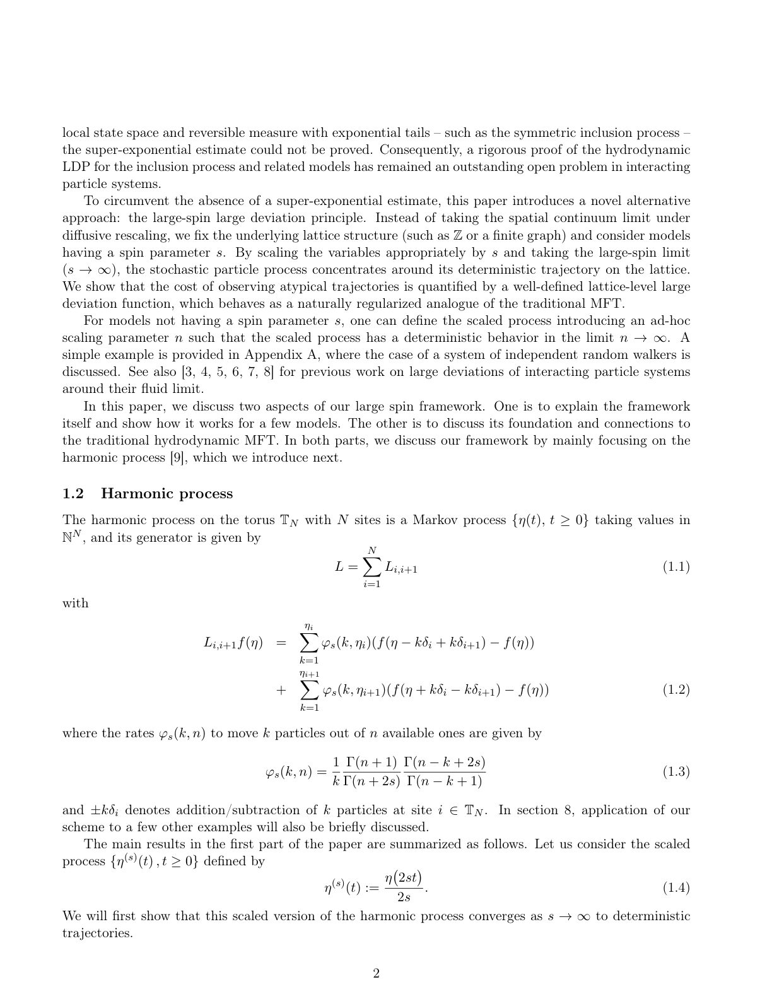
<figcaption class="paper-figure-caption"><b>Fig 1.</b> Low-resolution page preview, page 2</figcaption>
</figure>
<figure class="paper-figure-card">
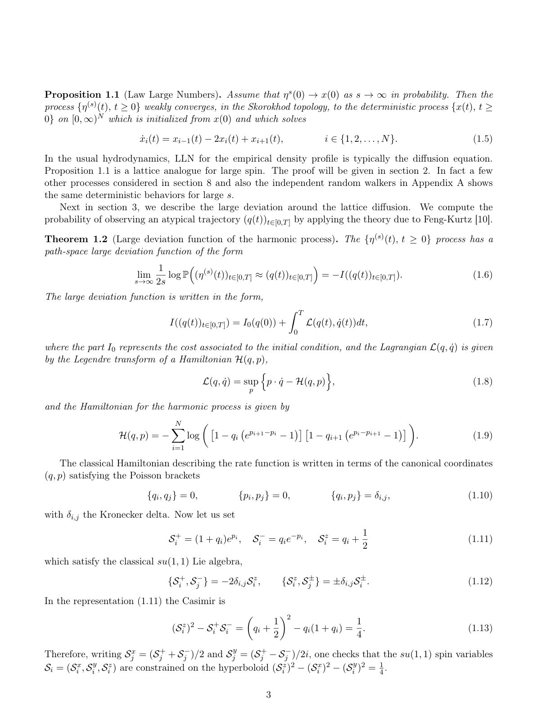
<figcaption class="paper-figure-caption"><b>Fig 2.</b> Low-resolution page preview, page 3</figcaption>
</figure>
<figure class="paper-figure-card">
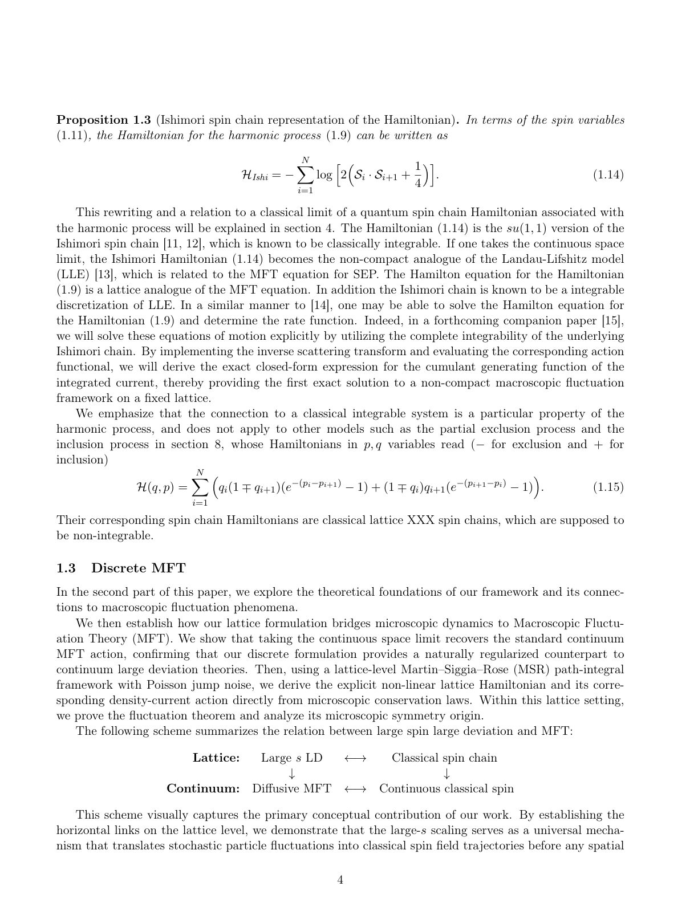
<figcaption class="paper-figure-caption"><b>Fig 3.</b> Low-resolution page preview, page 4</figcaption>
</figure>
<figure class="paper-figure-card">
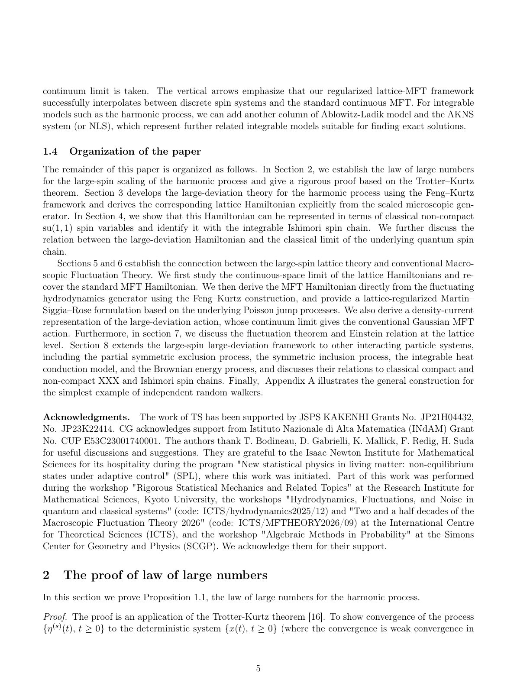
<figcaption class="paper-figure-caption"><b>Fig 4.</b> Low-resolution page preview, page 5</figcaption>
</figure>
<figure class="paper-figure-card">
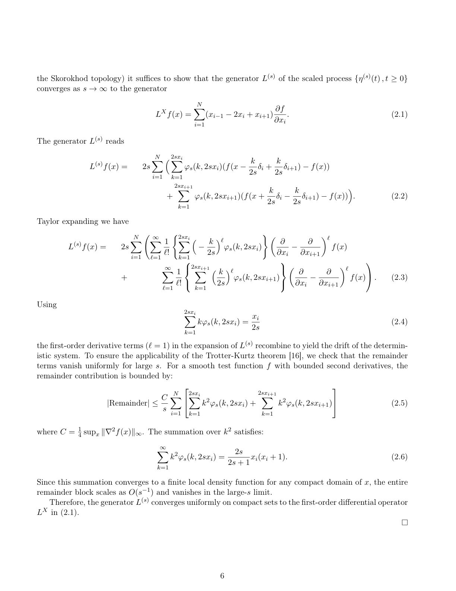
<figcaption class="paper-figure-caption"><b>Fig 5.</b> Low-resolution page preview, page 6</figcaption>
</figure>
</div>

<p><strong>Summary.</strong> This work introduces a powerful large-spin limit framework to calculate the large deviation rate function for interacting particle systems on a lattice. By mapping the stochastic dynamics to a classical Hamiltonian, the authors provide a regularized, lattice-based alternative to continuum fluctuation theories. This method successfully analyzes diverse models, linking their rare-event statistics to known integrable spin chains.</p>
<p><strong>Why it may be interesting.</strong> The development of a lattice analogue to MFT that avoids ultraviolet singularities is highly relevant for studying non-equilibrium dynamics in many-body systems, providing rigorous tools for calculating rare events in complex interacting particle models.</p>
<details>
<summary>Detailed structure</summary>
<p><strong>Main problem.</strong> The paper develops a novel framework to analyze the sample-path large deviations of interacting particle systems directly on a lattice.</p>
<p><strong>Main result.</strong> They derive the path-space large deviation rate function, which is described by a classical Hamiltonian, showing consistency with traditional Macroscopic Fluctuation Theory (MFT).</p>
<p><strong>Method.</strong> The core method involves taking a large-spin limit ($s 	o \infty$) of the microscopic generator and computing the rate function using the Feng-Kurtz theory.</p>
<p><strong>Model / system.</strong> The analysis is applied to various interacting particle systems, including the harmonic process, partial symmetric exclusion process, and Brownian energy process. The resulting Hamiltonians are often identified with classical integrable spin chains (e.g., Ishimori chain, XXX chain).</p>
<p><strong>Key observables.</strong> The path-space large deviation rate function, quantified by a Hamiltonian H(q, p).</p>
<p><strong>Important parameters / regimes.</strong> The large-spin limit ($s 	o \infty$) and the spatial continuous limit.</p>
<p><strong>Assumptions / limitations.</strong> The framework relies on the asymptotic analysis provided by the Feng-Kurtz theory and assumes the existence of a well-defined large-spin limit.</p>
<p><strong>Figures summary.</strong> Not specified.</p>
<p><strong>Paper structure.</strong> The paper first establishes the large-spin limit for the harmonic process, deriving the rate function and identifying its Hamiltonian. It then generalizes this framework to other models like the partial SEP and SIP, showing the resulting Hamiltonians map to known classical spin chains. Finally, it confirms the consistency with continuum MFT.</p>
</details>
<details>
<summary>Abstract</summary>
<p>We propose a novel framework for analyzing the sample-path large deviations of interacting particle systems directly on a lattice by considering a large-spin limit ($s \to \infty$). Through an appropriate scaling of variables, the process concentrates around its deterministic trajectory, governed by the lattice diffusion equation. We quantify the exponential cost of observing atypical trajectories by explicitly computing the path-space large deviation rate function from the scaled microscopic generator, based on a theory due to Feng and Kurtz. The rate function is described in terms of a Hamiltonian on a lattice in terms of classical spin variables. Notably, for our main model, the symmetric harmonic process, the corresponding Hamiltonian is identified with the classical integrable non-compact Ishimori spin chain.   Furthermore, we show that our large spin large deviation theory is fully consistent with traditional Macroscopic Fluctuation Theory (MFT), smoothly recovering the standard MFT Hamiltonian in the spatial continuous limit. We also perform a Poisson-noise Martin--Siggia--Rose (MSR) computation to derive the non-linear lattice Hamiltonian directly from microscopic dynamics, use a relative entropy argument to obtain the density-current action, and establish the lattice fluctuation theorem alongside its symmetry origin. Overall, our framework provides a naturally regularized, lattice analogue of MFT that circumvents spatial ultraviolet singularities and possible continuous density blow-ups.   We also apply our new scheme to partial symmetric exclusion process, symmetric inclusion processes, Brownian energy process and integrable heat conduction model, showing how their large-deviation Hamiltonians relate to classical compact and non-compact spin chains.</p>
</details>
<p><sub><a href="#top">↑ back to top</a></sub></p>

<p><a id="paper-2610.34769"></a></p>
<h3 id="learning-by-confusion-locates-a-parametrization-dependent-fisher-information-maximum"><a href="http://arxiv.org/abs/2610.34769v1">Learning by Confusion Locates a Parametrization-Dependent Fisher Information Maximum</a></h3>
<p><strong>Authors:</strong> George Issa, Richard Scalettar<br>
<strong>Type:</strong> theory · <strong>Category:</strong> statistical mechanics · <strong>PDF:</strong> <a href="https://arxiv.org/pdf/2610.34769v1">https://arxiv.org/pdf/2610.34769v1</a><br>
<strong>Analysis basis:</strong> full PDF text, analyzed in chunks
<strong>Topic relevance:</strong> <code>quantum measurements</code> <strong>1/5</strong></p>
<div class="figure-strip-hint">↔ Scroll figures horizontally</div>
<div class="paper-figures-scroll">
<figure class="paper-figure-card">
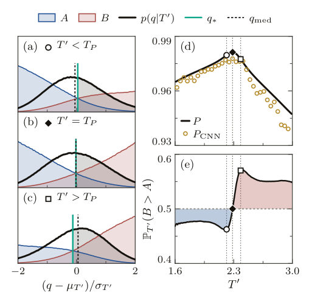
<figcaption class="paper-figure-caption"><b>Fig 1.</b> FIG. 1. At the confusion peak the classifier assigns half of the samples taken at the trial point to each class (Ising, L = 32, grid uniform in T, 128 000 energies per grid temper- ature). (a)–(c) Mixtures A and B, the distribution p(q|T ′) with its part assigned to B shaded, the decision boundary q∗, and the median qmed at T ′ below, at, and above the confu- sion peak TP (circle, diamond, square); energies in standard deviations σT ′ from the mean µT ′. (d) Accuracy P(T ′) of the Bayes-optimal classifier (line) and PCNN(T ′) of a trained convolutional network (circles, four trainings), both on the network’s 160 grid temperatures. (e) Share PT ′(B &gt; A) of the samples at T ′ assigned to B...</figcaption>
</figure>
<figure class="paper-figure-card">
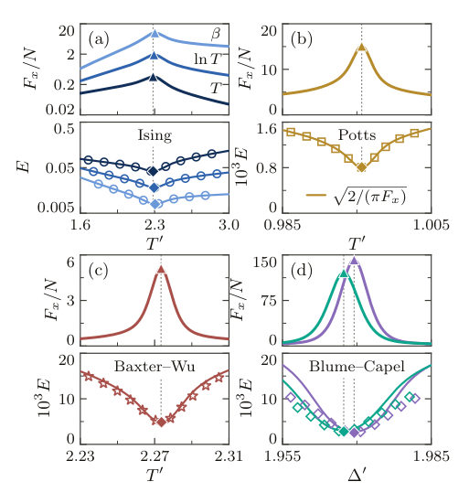
<figcaption class="paper-figure-caption"><b>Fig 2.</b> FIG. 2. The error follows the Fisher information. Upper pan- els: Fx/N [Eq. (6)], N the number of sites, with its maximum xF (triangle, dotted line); lower panels: E = (x+−x−) (1−P) (hollow markers), the Gaussian curve p</figcaption>
</figure>
<figure class="paper-figure-card">
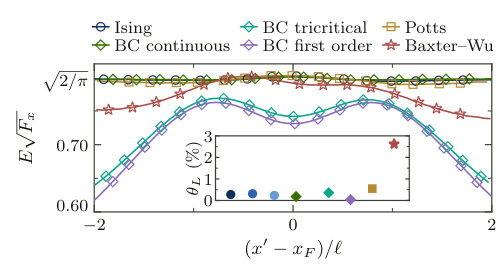
<figcaption class="paper-figure-caption"><b>Fig 3.</b> FIG. 3. The overlap sets the height of the error, and its slope the position of the peak: c = E√Fx against (x′ −xF )/ℓ for Ising (T grid, L = 64), the Blume–Capel (BC) ∆sweeps at T = 1.2 (continuous, L = 64), 0.608 (tricritical, L = 48), and 0.6 (first order, L = 24), Potts (L = 256), and Baxter– Wu (L = 72). Inset: θL [Eq. (12)] in the order of the key, Ising on its T, ln T, and β grids (dark to light), averaged over L = 24–64, 24–64, 24–48, 16–24, 96–256, and 36–72; error bars mostly within the markers.</figcaption>
</figure>
<figure class="paper-figure-card">
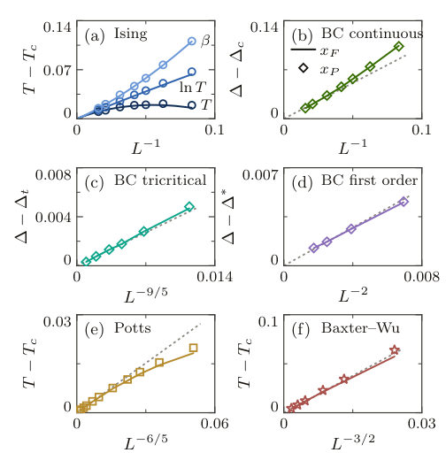
<figcaption class="paper-figure-caption"><b>Fig 4.</b> FIG. 4. The confusion peak inherits the finite-size law of the Fisher maximum: distance of xF (lines) and xP (hollow markers) from the critical point against L−y. (a) Ising on its T, ln T, and β grids (dark to light), with the exact torus maxima [31, 32] up to L = 1024; (b)–(d) Blume–Capel (BC) ∆sweeps at T = 1.2 (∆c = 1.4167, y = 1), 0.608 (∆t = 1.9660, y = 9/5), and 0.6 (∆∗= 1.968174, y = 2); (e) Potts (y = 6/5); (f) Baxter–Wu (y = 3/2). Dotted, (b)–(f): aF L−y</figcaption>
</figure>
</div>

<p><strong>Summary.</strong> This theoretical paper establishes a deep connection between the 'Learning by Confusion' method for finding phase transitions and the Fisher information. It proves that the LBC peak tracks the Fisher maximum, but critically shows that this estimate can be misleading if the data sampling parametrization is not accounted for.</p>
<p><strong>Why it may be interesting.</strong> While focused on classical statistical mechanics, the rigorous mathematical framework connecting machine learning diagnostics (LBC) to fundamental physical quantities (Fisher information) provides a generalizable methodology for analyzing complex, non-equilibrium physical measurements.</p>
<details>
<summary>Detailed structure</summary>
<p><strong>Main problem.</strong> The paper addresses the ambiguity in locating phase transitions using the 'Learning by Confusion' (LBC) method, specifically determining how the peak location relates to established physical quantities.</p>
<p><strong>Main result.</strong> The confusion peak location closely follows the maximum of the corresponding Fisher information, and this relationship is shown to be sensitive to how the data are parametrized (e.g., T vs. ln T vs. 1/T).</p>
<p><strong>Method.</strong> The authors derive an exact balance condition for the Bayes-optimal confusion peak and compare it mathematically to the maximum of the Fisher information, utilizing finite-size scaling analysis.</p>
<p><strong>Model / system.</strong> The analysis is applied to classical lattice models exhibiting phase transitions, including the Ising, Blume-Capel, Potts, and Baxter-Wu models, covering continuous, tricritical, and first-order transitions.</p>
<p><strong>Key observables.</strong> LBC accuracy ($P(x')$), Bayes error ($E(x')$), Fisher information ($F_x$), and the overlap factor ($c(x)$).</p>
<p><strong>Important parameters / regimes.</strong> System size ($L$), temperature ($T$), inverse temperature ($eta$), and the specific parametrization of the data sweep.</p>
<p><strong>Assumptions / limitations.</strong> The analysis assumes the probability distribution belongs to the exponential-family form, and the coincidence of peaks is exact under specific symmetry conditions.</p>
<p><strong>Figures summary.</strong> Figures illustrate the comparison of LBC accuracy and Bayes error against the Fisher information for various models and sweeps, confirming the scaling relationship between the two pseudocritical points.</p>
<p><strong>Paper structure.</strong> The paper first introduces LBC and the problem of peak location. It then derives the theoretical balance condition linking the confusion peak to the Fisher maximum. The core of the work involves testing this relationship across multiple lattice models and analyzing the dependence on data parametrization.</p>
</details>
<details>
<summary>Abstract</summary>
<p>Learning by confusion (LBC) is a machine-learning method for locating phase transitions without assuming a known order parameter. Its characteristic accuracy curve contains a central maximum that is interpreted as the transition point, but what determines the location and finite-size scaling of this maximum has remained unclear. We derive an exact balance condition for the Bayes-optimal confusion peak and show that, for equilibrium systems with a single swept parameter, the peak closely follows the maximum of the corresponding Fisher information. This immediately gives its finite-size scaling and reveals an unexpected dependence on how the data are sampled: the same configurations arranged on grids uniform in $T$, $\ln T$, or $β=1/T$ can yield different finite-size pseudocritical trajectories. Tests on the Ising, Blume-Capel, Potts, and Baxter-Wu models confirm the prediction across continuous, tricritical, and first-order transitions. Our results identify the statistical quantity measured by LBC and show that finite-size machine-learning estimates can depend on the parametrization of the training data as well as on the underlying physics.</p>
</details>
<p><sub><a href="#top">↑ back to top</a></sub></p>

<p><a id="paper-2610.35524"></a></p>
<h3 id="negative-power-density-of-states-in-chiral-orthogonal-disordered-systems-and-the-ir-phase-of-qcd"><a href="http://arxiv.org/abs/2610.35524v1">Negative-Power Density of States in Chiral-Orthogonal Disordered Systems and the IR Phase of QCD</a></h3>
<p><strong>Authors:</strong> Jiří Adam, Andrei Alexandru, Navdeep Singh Dhindsa, Ivan Horváth, Frank X. Lee, Nilmani Mathur<br>
<strong>Type:</strong> theory · <strong>Category:</strong> disordered systems and neural networks · <strong>PDF:</strong> <a href="https://arxiv.org/pdf/2610.35524v1">https://arxiv.org/pdf/2610.35524v1</a><br>
<strong>Analysis basis:</strong> full PDF text, analyzed in chunks
<strong>Topic relevance:</strong> <code>analog quantum simulation</code> <strong>1/5</strong></p>
<div class="figure-strip-hint">↔ Scroll figures horizontally</div>
<div class="paper-figures-scroll">
<figure class="paper-figure-card">
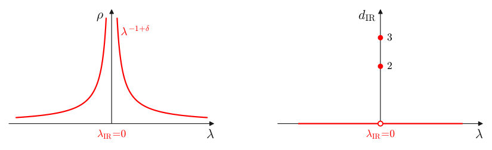
<figcaption class="paper-figure-caption"><b>Fig 1.</b> Figure 1: Structural fingerprints of the deep-IR (near λIR =0) Dirac structure for the system in IR phase. Left: negative power law behavior of spectral density. Right: effective spatial dimension of the modes. Note that dIR =3 for exact zero modes while dIR ≈2 for lowest near-zero modes.</figcaption>
</figure>
<figure class="paper-figure-card">
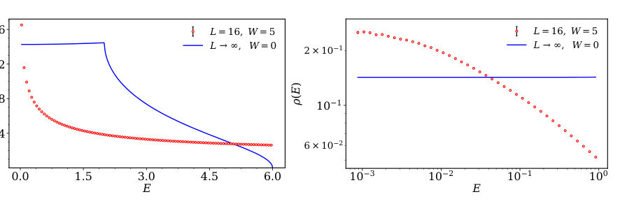
<figcaption class="paper-figure-caption"><b>Fig 2.</b> Figure 2: Left: density of states for non-random spectrum (5) in D=3 over its spectral range (blue line) compared to the case of W =5 logarithmic noise. Right: zoom (log-log form) to the lowest part of the spectrum where DOS of L=16 random system doesn’t change upon increasing L.</figcaption>
</figure>
<figure class="paper-figure-card">
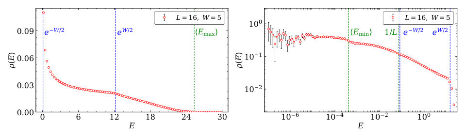
<figcaption class="paper-figure-caption"><b>Fig 3.</b> Figure 3: Density of states for W =5, L=16 system in the lin-lin (left) and log-log (right) form over the entire spectral range. Effective spectral bounds ⟨Emin⟩and ⟨Emax⟩, as well as all explicit cutoffs are shown. See the discussion in the text.</figcaption>
</figure>
<figure class="paper-figure-card">
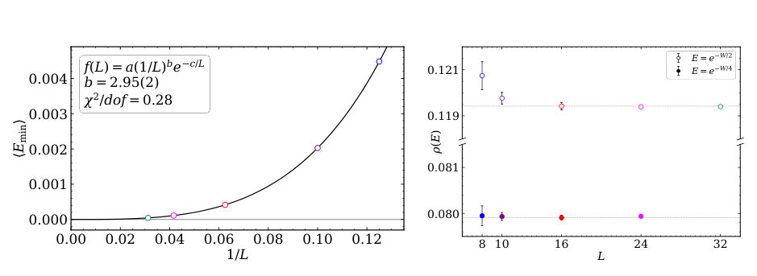
<figcaption class="paper-figure-caption"><b>Fig 4.</b> Figure 4: Left: the average minimal positive eigenvalue as a function of 1/L for the system at W =5. The form of the fit was originally proposed in Ref. [6]. Right: the L-dependence of ρ(e−W/2) and ρ(e−W/4) at W =5. See the discussion in the text.</figcaption>
</figure>
<figure class="paper-figure-card">
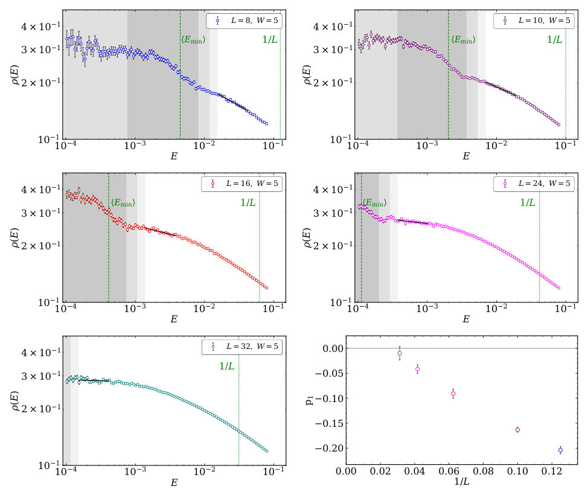
<figcaption class="paper-figure-caption"><b>Fig 5.</b> Figure 5: Spectral densities at W =5 in deep IR (E &lt; e−W/2) with increasing L. Scales 1/L and ⟨Emin⟩are marked by vertical lines. Shaded bands delimit the regions 1σ, 2σ and 3σ away from ⟨Emin⟩(σ is the standard deviation). Lower right: the power p1 extracted from regions adjacent to ⟨Emin⟩+ 3σ, and shown by solid line segments, as a function of 1/L.</figcaption>
</figure>
</div>

<p><strong>Summary.</strong> This paper connects the theoretical prediction of a scale-invariant Dirac spectrum in the IR phase of QCD to a solvable condensed matter model: the chiral-orthogonal Anderson model. By analyzing the DOS under increasing disorder strength, the authors show that the model naturally evolves towards a universal power-law exponent of $-1$ in the infinite disorder limit. This suggests that the randomness strength $W$, rather than the lattice size $L$, dictates the relevant IR cutoff for modeling QCD phenomena.</p>
<p><strong>Why it may be interesting.</strong> This work provides a concrete, solvable condensed matter model (chiral Anderson model) to test a deep theoretical prediction from high-energy physics (QCD IR phase), offering insights into how disorder can generate scale-invariant spectral features.</p>
<details>
<summary>Detailed structure</summary>
<p><strong>Main problem.</strong> The paper investigates whether the negative power-law density of states (DOS) near zero energy, characteristic of the Infrared (IR) phase of QCD, can be reproduced by chiral-orthogonal Anderson models.</p>
<p><strong>Main result.</strong> The models do not exhibit a power-singular DOS at zero energy for finite disorder, but in the limit of infinite disorder strength, the DOS approaches a universal power law $
ho(E) \propto E^{-1}$, mimicking the QCD prediction.</p>
<p><strong>Method.</strong> The authors analyze the spectrum of 3-D chiral-orthogonal Anderson models with logarithmic off-diagonal disorder, using numerical diagonalization and finite-size scaling to extrapolate the behavior in the thermodynamic limit.</p>
<p><strong>Model / system.</strong> The system is a 3-D chiral-orthogonal Anderson model defined on a lattice with periodic boundary conditions. The disorder is introduced via logarithmic off-diagonal hopping strengths $t$, which are drawn from a scale-invariant $1/t$ distribution regulated by the disorder strength $W$.</p>
<p><strong>Key observables.</strong> Dirac spectral density $
ho(\lambda)$ near $\lambda 	o 0$, and the power-law exponent $p$ characterizing the DOS $
ho(E) \propto E^p$.</p>
<p><strong>Important parameters / regimes.</strong> Disorder strength $W$, lattice size $L$, and the energy $E$. The analysis focuses on the limits $W 	o \infty$ and $L 	o \infty$.</p>
<p><strong>Assumptions / limitations.</strong> The analysis assumes that the IR cutoff in the Anderson system should be viewed as descending from the randomness strength $W$, rather than the lattice size $L$, to correctly model the QCD IR sector.</p>
<p><strong>Figures summary.</strong> Figures illustrate the negative power-law behavior of the spectral density and the effective spatial dimension in the deep IR, comparing results for finite disorder strengths $W$ and showing extrapolations of the power-law exponent $p(W)$ towards $-1$.</p>
<p><strong>Paper structure.</strong> The paper establishes the theoretical connection between the QCD IR phase and scale-invariant spectral densities. It then applies this concept to the chiral Anderson model, analyzing the DOS behavior under increasing disorder strength $W$ and extrapolating the results to the thermodynamic limit to derive the universal exponent.</p>
</details>
<details>
<summary>Abstract</summary>
<p>The recently discovered IR phase of QCD is characterized by an infrared (IR) sector of Dirac modes that separates and dynamically decouples from the bulk of the spectrum, becoming scale invariant in the process [1]. Among key features of this IR sector is the negative power-law behavior of Dirac spectral density near zero with power $p$ close to $-1$. Here we start investigating to what extent can this behavior be mimicked by chiral Anderson models. In particular, we study 3-D chiral-orthogonal systems with logarithmic off-diagonal disorder where negative-power ``spikes'' have been observed [2]. We find that at finite disorder strength $W$ of moderate strength, these models in fact do not have a power-singular density of states (DOS) at zero energy in the thermodynamic limit. Rather, this power $p_1$ vanishes and the spectrum features a very accurate power behavior with $p<0$ on an interval around $E = 1$ spreading increasingly closer to $E=0$ and $E = \infty$ with increasing $W$. We connect this to the fact that random hoppings $t$ in these quantum systems are drawn from a scale-invariant $1/t$ distribution regularized via $t \in [e^{-W/2}, e^{W/2}]$, and DOS with negative power can naturally arise inside that range. We show that $\lim_{W \to \infty} p(W, E)=-1$ for all energies accessible by our data. This indicates that, upon removing the cutoff $W$, quantum mechanics transforms the scale-invariant $1/t$ noise into a scale-invariant $1/E$ distribution of eigenstates, which mimics the interpretation of scale-invariant Dirac spectral densities in the IR phase as being due to scale-invariant glue backgrounds [1]. Our results imply that, to model the IR sector of the IR phase, the IR cutoff in chiral Anderson systems needs to be viewed as descending from the randomness strength $W$ rather than the lattice size $L$.</p>
</details>
<p><sub><a href="#top">↑ back to top</a></sub></p>

<p><a id="paper-2610.33316"></a></p>
<h3 id="optimal-search-strategies-under-finite-resource-constraints"><a href="http://arxiv.org/abs/2610.33316v1">Optimal Search Strategies under Finite Resource Constraints</a></h3>
<p><strong>Authors:</strong> Hugues Meyer<br>
<strong>Type:</strong> theory · <strong>Category:</strong> statistical mechanics · <strong>PDF:</strong> <a href="https://arxiv.org/pdf/2610.33316v1">https://arxiv.org/pdf/2610.33316v1</a><br>
<strong>Analysis basis:</strong> full PDF text, analyzed in chunks
<strong>Topic relevance:</strong> <code>quantum measurements</code> <strong>1/5</strong></p>
<div class="figure-strip-hint">↔ Scroll figures horizontally</div>
<div class="paper-figures-scroll">
<figure class="paper-figure-card">
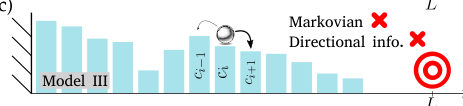
<figcaption class="paper-figure-caption"><b>Fig 1.</b> FIG. 1. Sketch of the models, in which the searcher starts at x = 0 and needs to reach x = L on the semi-infinite line. (a) An external force is applied via a potential profile. (b) Flags are deposited by the searcher along its way, which partially reflect it and effectively act as a piecewise constant potential. (c) Continuous cues can be deposited by the searcher and its further motion is governed by the cue profile gradient.</figcaption>
</figure>
<figure class="paper-figure-card">
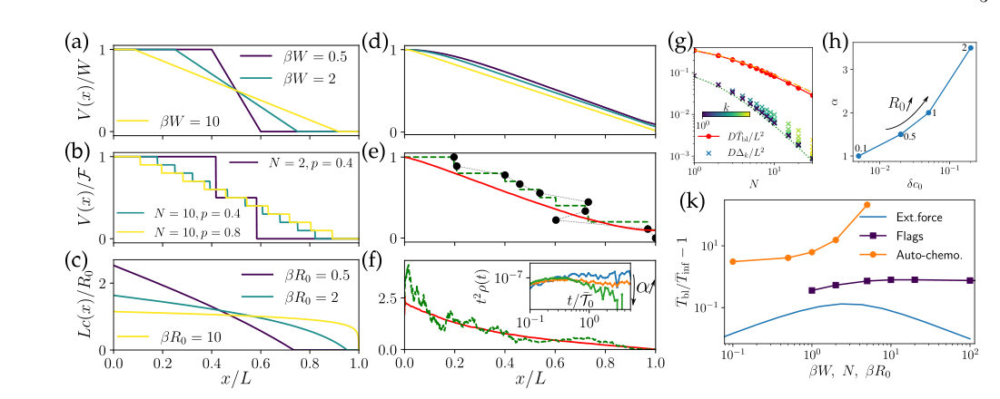
<figcaption class="paper-figure-caption"><b>Fig 2.</b> FIG. 2. (a-c) Optimal resource profile in the informed processes: (a) potential profile in model I, (b) flag profile in model II (c) auto-chemotactic cue profile in model III. (d-e) Trajectory-averaged resource profiles in the optimal blind processes: (d) Trajectory-averaged potential in model I; (e) Trajectory-averaged potential generated by deposited flags in model II for N = 10 and p = 0.8 (solid line), together with a profile of a single trajectory (dashed line) where the dotted line and dots show the order in which flags were deposited. (f) Trajectory-averaged chemotactic cue profile for βR0/L = 2 (solid line) with one instance of a profile in a single trajectory (dashed line). The...</figcaption>
</figure>
</div>

<p><strong>Summary.</strong> This work develops the theory of optimal search strategies when resources are scarce, moving beyond idealized unlimited resource assumptions. By modeling diffusion with external forces, deposited flags, and chemical cues, the authors derive protocols showing that positional knowledge allows for highly concentrated resource use. The findings highlight the critical difference in performance between informed and blind search strategies under resource limitations.</p>
<p><strong>Why it may be interesting.</strong> The concepts of optimal resource allocation and path-dependent memory effects in search processes are highly relevant to understanding energy minimization in complex physical systems, such as reaction-diffusion fronts or particle trapping in engineered potentials.</p>
<details>
<summary>Detailed structure</summary>
<p><strong>Main problem.</strong> The paper investigates optimal search strategies for an agent trying to locate a target when the resources required for the search (energy, materials, cues) are limited to a finite budget.</p>
<p><strong>Main result.</strong> Optimal informed strategies concentrate resource allocation spatially, whereas blind searchers must distribute resources more evenly; non-Markovian cues significantly boost performance for informed search but less so for blind search.</p>
<p><strong>Method.</strong> The authors derive exact optimal resource-allocation protocols by minimizing the Mean First-Passage Time (MFPT) under finite resource constraints for various physical models.</p>
<p><strong>Model / system.</strong> The system models a one-dimensional diffusive searcher moving from $x=0$ to $x=L$, utilizing three resource types: an external force (Model I), deposited flags (Model II), and auto-chemotactic cues (Model III).</p>
<p><strong>Key observables.</strong> Mean First-Passage Time ($ar{T}$), optimal resource profiles ($   ext{c}^*(x)$ or $F(x)$), and the ratio $ar{T}_{	ext{bl}} / ar{T}_{	ext{inf}}$.</p>
<p><strong>Important parameters / regimes.</strong> Finite resource budget ($W$ or $R_0$), diffusion constant ($D$), and the coupling strength ($eta$).</p>
<p><strong>Assumptions / limitations.</strong> The analysis explicitly moves beyond the standard assumption of unlimited resource supply, considering fixed, finite budgets.</p>
<p><strong>Figures summary.</strong> Figure 1 sketches the three resource models on a semi-infinite line. Figure 2 illustrates the optimal resource profiles for informed processes and the trajectory-averaged profiles for blind processes.</p>
<p><strong>Paper structure.</strong> The paper systematically analyzes three distinct physical models (Force, Flags, Cues) to derive optimal resource allocation protocols for both informed (position-aware) and blind (stochastic) search processes, comparing the resulting MFPTs.</p>
</details>
<details>
<summary>Abstract</summary>
<p>Improving target search is a challenge faced by many natural and artificial agents, often requiring the use of energetic or material resources. These inputs may be supplied by an external controller or generated by the searcher itself, for example, through the deposition of cues along its trajectory. Although such resources are commonly modeled as costly but available without an explicit limit, in practice, they can often only be produced in finite amounts. Here, we go beyond the assumption of an unlimited supply of resources by investigating searches in which a finite resource budget must be allocated throughout the search process. To investigate this problem, we equip a one-dimensional diffusive searcher with three types of resources: an external force, a supply of partially reflecting flags, and auto-chemotactic cues. We derive exact optimal resource-allocation protocols for informed search processes in which the agent has continuous access to its past and current positions, which we find to always require resource allocation to be spatially concentrated. We then determine the corresponding protocols for blind searchers and show that resource usage must be more evenly distributed. Non-Markovian cues that generate environmental memory are found to substantially improve search performance when the agent has access to positional information, even under finite-resource constraints. In contrast, their benefits are considerably more limited for blind search, particularly when the cues provide no directional information.</p>
</details>
<p><sub><a href="#top">↑ back to top</a></sub></p>

<p><a id="paper-2610.35255"></a></p>
<h3 id="orbital-selective-correlations-in-kagome-flat-bands-of-comath1166mathsnmath1167mathsmath1168math"><a href="http://arxiv.org/abs/2610.35255v1">Orbital-selective correlations in kagome flat bands of Co$_3$Sn$_2$S$_2$</a></h3>
<p><strong>Authors:</strong> Rongxiang Zhu, Huaiqiang Wang, Haijun Zhang, Jianzhou Zhao<br>
<strong>Type:</strong> theory · <strong>Category:</strong> strongly correlated electrons · <strong>PDF:</strong> <a href="https://arxiv.org/pdf/2610.35255v1">https://arxiv.org/pdf/2610.35255v1</a><br>
<strong>Analysis basis:</strong> full PDF text, analyzed in chunks
<strong>Topic relevance:</strong> <code>Keldysh / 2PI / non-Gaussian methods</code> <strong>1/5</strong></p>
<div class="figure-strip-hint">↔ Scroll figures horizontally</div>
<div class="paper-figures-scroll">
<figure class="paper-figure-card">
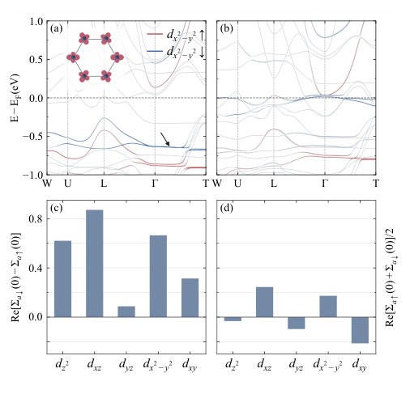
<figcaption class="paper-figure-caption"><b>Fig 1.</b> FIG. 2. Quasiparticle band structure and self-energy de- composition. (a) FM DFT+SOC bands projected onto the Co dx2−y2 orbital. Red and blue denote the spin-up and spin-down dx2−y2 contributions, respectively. (b) The corresponding quasiparticle bands from Eq. (1). (c) Or- bital dependent spin-antisymmetric zero-frequency self-energy ∆Σa = ℜ[¯Σa↓(0) −¯Σa↑(0)]. (d) Spin-averaged component Σc,a = 1</figcaption>
</figure>
<figure class="paper-figure-card">
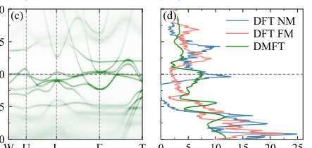
<figcaption class="paper-figure-caption"><b>Fig 2.</b> FIG. 1. Low-energy electronic structure. (a) NM DFT band structure with SOC. The charge density of the flat band at EF is illustrated on the top right. (b) FM DFT band structure with SOC. (c) Momentum-resolved DFT+DMFT spectral function in the FM state. (d) Total density of states obtained from NM DFT, FM DFT, and DFT+DMFT.</figcaption>
</figure>
<figure class="paper-figure-card">
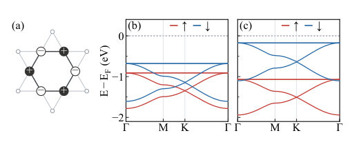
<figcaption class="paper-figure-caption"><b>Fig 3.</b> FIG. 3. Flat-band formation and relocation. (a) Schematic illustration of kagome flat-band formation. The filled and open circles with + and −signs represent the alternating wave- function phases. (b) Band structure of the three-band Slater- Koster model HSK with nearest-neighbor hopping. Red and blue solid curves denote the spin-up and spin-down channels, respectively. (c) Band structure obtained by adding the static DMFT self-energy correction.</figcaption>
</figure>
<figure class="paper-figure-card">
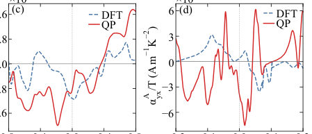
<figcaption class="paper-figure-caption"><b>Fig 4.</b> FIG. 4. Correlation-induced Berry-curvature redistribution and anomalous transverse response. (a) Berry curvature in the kz = 0 plane for FM DFT summed over all occupied states. (b) Berry curvature in the kz = 0 plane for the DMFT quasiparti- cle Hamiltonian. (c) Intrinsic anomalous Hall conductivity σxy as a function of the chemical potential µ. (d) Low-temperature anomalous thermoelectric conductivity αA yx/T = −αA xy/T ob- tained from the Mott relation.</figcaption>
</figure>
</div>

<p><strong>Summary.</strong> This work elucidates the origin of a key flat band in $    ext{Co}_3   ext{Sn}_2   ext{S}_2$ by employing DFT+DMFT on a kagome model. The authors demonstrate that the band's position near the Fermi level is governed by static, orbital-dependent self-energy corrections, not simple renormalization. This mechanism predicts enhanced topological responses like anomalous Hall conductivity.</p>
<p><strong>Why it may be interesting.</strong> The concept of orbital-selective correlation mechanisms driving topological features like flat bands is highly relevant to understanding strongly correlated topological materials, which often bridge the gap between simple band theory and complex many-body physics.</p>
<details>
<summary>Detailed structure</summary>
<p><strong>Main problem.</strong> The study aims to understand the origin of an experimentally observed flat-band feature near the Fermi level in $ ext{Co}_3   ext{Sn}_2   ext{S}_2$ that is missing from standard DFT calculations.</p>
<p><strong>Main result.</strong> The flat band is shown to arise from the static, orbital- and spin-dependent shifting of a $   ext{d}_{x^2-y^2}$-dominated geometrical kagome flat band toward $E_F$, rather than heavy-fermion renormalization.</p>
<p><strong>Method.</strong> The authors combine DFT with Dynamical Mean-Field Theory (DMFT) applied to a minimal kagome model to calculate self-energies and electronic structure.</p>
<p><strong>Model / system.</strong> The system is the ferromagnetic Weyl semimetal $    ext{Co}_3   ext{Sn}_2   ext{S}_2$, modeled using a minimal nearest-neighbor Kagome Hamiltonian derived from the DFT Wannier function.</p>
<p><strong>Key observables.</strong> Anomalous Hall Conductivity (AHC), anomalous Nernst effect (ANE), local Berry curvature, and the energy shift of the flat band.</p>
<p><strong>Important parameters / regimes.</strong> The self-energy components ($\Delta\Sigma_a(0)$ and $\Sigma_{c,a}(0)$) are crucial, as is the orbital character ($  ext{d}_{x^2-y^2}$) of the affected band.</p>
<p><strong>Assumptions / limitations.</strong> The analysis relies on the minimal kagome model to isolate the orbital-selective correlation mechanism responsible for the band shift.</p>
<p><strong>Figures summary.</strong> Figures compare electronic structure (DOS) across different theoretical treatments (DFT vs. DFT+DMFT) and illustrate the band structure and self-energy decomposition, highlighting the $  ext{d}_{x^2-y^2}$ projection.</p>
<p><strong>Paper structure.</strong> The paper establishes the problem by contrasting experiment and DFT, develops the mechanism using DMFT on a minimal model to show the self-energy-driven shift, and concludes by predicting observable topological transport properties (AHC, ANE).</p>
</details>
<details>
<summary>Abstract</summary>
<p>Geometrical flat bands provide an ideal platform for studying electronic correlations and quantum-geometric effects. Although the ferromagnetic Weyl semimetal \CoSnS is generally considered a moderately correlated system, recent spectroscopy experiments have revealed a flat-band feature near the Fermi level ($\EF$) that is absent in conventional density functional theory (DFT) calculations. Using DFT plus dynamical mean-field theory and a minimal kagome model, we show that this feature arises not from heavy-fermion-like dynamical band renormalization, but from the shifting of a $d_{x^2-y^2}$ dominated geometrical kagome flat band toward $\EF$ driven by orbital- and spin-dependent self-energies. The relocated flat band enhances the local Berry curvature near $\EF$, resulting in a strongly energy-dependent anomalous Hall conductivity and a giant anomalous Nernst effect. Our findings establish an orbital-selective correlation mechanism for positioning geometrical flat bands at $\EF$, and propose anomalous thermoelectric transport as a sensitive probe of flat band induced topology.</p>
</details>
<p><sub><a href="#top">↑ back to top</a></sub></p>

<p><a id="paper-2610.34762"></a></p>
<h3 id="quantum-ordinal-selection-with-two-comparisons"><a href="http://arxiv.org/abs/2610.34762v1">Quantum ordinal selection with two comparisons</a></h3>
<p><strong>Authors:</strong> Hongyu Wu<br>
<strong>Type:</strong> theory · <strong>Category:</strong> quantum information and computing · <strong>PDF:</strong> <a href="https://arxiv.org/pdf/2610.34762v1">https://arxiv.org/pdf/2610.34762v1</a><br>
<strong>Analysis basis:</strong> full PDF text, analyzed in chunks
<strong>Topic relevance:</strong> <code>quantum measurements</code> <strong>1/5</strong></p>
<div class="figure-strip-hint">↔ Scroll figures horizontally</div>
<div class="paper-figures-scroll">
<figure class="paper-figure-card">
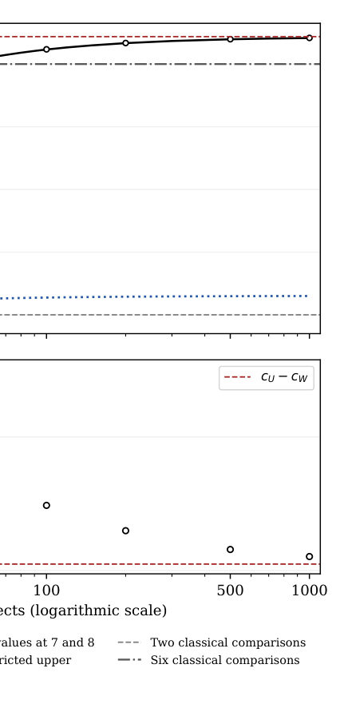
<figcaption class="paper-figure-caption"><b>Fig 1.</b> Figure 1: Size-scaled probability of selecting the best object</figcaption>
</figure>
</div>

<p><strong>Summary.</strong> This paper rigorously analyzes the quantum limits of selecting an object based on its rank using only two comparisons. It develops a specialized semidefinite programming model to characterize the achievable success probability. The key finding quantifies the quantum advantage over classical methods for this specific selection problem.</p>
<p><strong>Why it may be interesting.</strong> It provides a concrete, mathematically rigorous bound on the advantage quantum computation can offer over classical methods for fundamental comparison-based tasks, which is a core topic in quantum information theory.</p>
<details>
<summary>Detailed structure</summary>
<p><strong>Main problem.</strong> The paper determines the optimal probability of selecting an object within a prescribed rank threshold using at most two noiseless coherent pairwise comparisons of an unknown strict order.</p>
<p><strong>Main result.</strong> The optimal quantum-to-classical success ratio for minimum selection converges to approximately 2.48 under the two-comparison budget, and the explicit algorithm family's asymptotic success is within 0.016% of the unrestricted optimum.</p>
<p><strong>Method.</strong> The authors develop a comparison-specific semidefinite model to completely characterize attainable success, using computer-assisted proofs and advanced SDP techniques.</p>
<p><strong>Model / system.</strong> The model involves quantum information processing on an unknown strict order of $n$ objects, queried via a comparison-XOR oracle, limited to at most two oracle calls.</p>
<p><strong>Key observables.</strong> Optimal alignment probability $Q_2(n, r)$, classical optimum $C_2(n, r)$, and the quantum-to-classical success ratio.</p>
<p><strong>Important parameters / regimes.</strong> The number of objects ($n$), the rank threshold ($r$), and the number of comparisons (fixed at two).</p>
<p><strong>Assumptions / limitations.</strong> The analysis requires retaining both strict-order relations and constraints from the sequence of physical operations, and the final results rely on complex mathematical verifications.</p>
<p><strong>Figures summary.</strong> Tables summarize optimal selection probabilities and numerical minimum-selection values for various object counts ($n$) and ranks ($r$).</p>
<p><strong>Paper structure.</strong> The paper progresses from defining the problem and developing the SDP characterization of $Q_2(n, r)$ via causal equalities, to establishing exact optima for small cases, and finally presenting rigorous mathematical proofs using advanced algebraic verification techniques.</p>
</details>
<details>
<summary>Abstract</summary>
<p>We study the optimal probability of selecting an object within a prescribed rank threshold using at most two noiseless coherent pairwise comparisons of an unknown strict order. Polynomial degree bounds alone can overestimate the success attainable with two comparisons. We develop a comparison-specific semidefinite model that completely characterizes attainable success. Computer-assisted proofs establish the exact optimum for every rank threshold at seven objects and for minimum selection at eight. For minimum selection, we construct an explicit algorithm family and determine its exact optimum. Bounds for all admissible two-comparison algorithms show that the family's asymptotic success is within 0.016% of the unrestricted optimum. We also prove that this relative gap has a strictly positive limit. The optimal quantum-to-classical success ratio for minimum selection converges to approximately 2.48 under the same two-comparison budget.</p>
</details>
<p><sub><a href="#top">↑ back to top</a></sub></p>

<p><a id="paper-2610.35824"></a></p>
<h3 id="sparse-carleman-embeddings-for-nonlinear-discrete-dynamical-systems"><a href="http://arxiv.org/abs/2610.35824v1">Sparse Carleman Embeddings for Nonlinear Discrete Dynamical Systems</a></h3>
<p><strong>Authors:</strong> Hsuan-Cheng Wu, Xiantao Li<br>
<strong>Type:</strong> theory · <strong>Category:</strong> quantum information and computing · <strong>PDF:</strong> <a href="https://arxiv.org/pdf/2610.35824v1">https://arxiv.org/pdf/2610.35824v1</a><br>
<strong>Analysis basis:</strong> full PDF text, analyzed in chunks
<strong>Topic relevance:</strong> <code>analog quantum simulation</code> <strong>1/5</strong></p>
<div class="figure-strip-hint">↔ Scroll figures horizontally</div>
<div class="paper-figures-scroll">
<figure class="paper-figure-card">
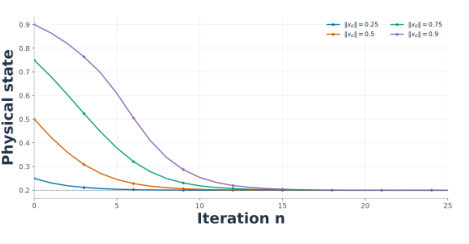
<figcaption class="paper-figure-caption"><b>Fig 1.</b> Figure 1: Numerical results for the discrete Carleman approximation.</figcaption>
</figure>
<figure class="paper-figure-card">
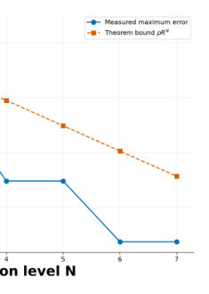
<figcaption class="paper-figure-caption"><b>Fig 2.</b> Figure 2: The Carleman truncation error versus truncation level N.</figcaption>
</figure>
</div>

<p><strong>Summary.</strong> This paper tackles the challenge of simulating nonlinear discrete dynamical systems by using a Carleman embedding to convert the problem into a linear evolution in a high-dimensional space. The authors overcome the technical hurdle of matrix densification by creating a sparse auxiliary representation, leading to a quantum algorithm whose query complexity scales favorably (linearly in steps $n$) for state preparation.</p>
<p><strong>Why it may be interesting.</strong> The work provides a concrete, resource-bounded quantum approach to simulating complex, non-linear dynamics, which is a major frontier in quantum simulation and quantum information.</p>
<details>
<summary>Detailed structure</summary>
<p><strong>Main problem.</strong> The core problem is developing quantum algorithms to efficiently compute the $n$-th iterate of high-dimensional, nonlinear discrete dynamical systems, which is computationally expensive.</p>
<p><strong>Main result.</strong> The authors prove that the approximation error decreases geometrically with the embedding degree, and they derive a quantum algorithm with query complexity linear in $n$ for state preparation.</p>
<p><strong>Method.</strong> They employ the Carleman embedding to linearize the nonlinear recurrence, overcoming the issue of matrix densification by constructing an exact, sparse auxiliary linear-system representation.</p>
<p><strong>Model / system.</strong> The system studied is a forced quadratic discrete dynamical system, $x_{n+1} = f + Ax_n + Bx_n \otimes x_n$, which models processes like population dynamics or optimization.</p>
<p><strong>Key observables.</strong> Truncation error, condition number of the history system ($\Theta(n)$), and quantum oracle query complexity (linear in $n$).</p>
<p><strong>Important parameters / regimes.</strong> Embedding degree ($N$), iteration count ($n$), and the inverse accuracy ($\epsilon$).</p>
<p><strong>Assumptions / limitations.</strong> The analysis requires explicit stability and initial-state assumptions, and assumes coherent input-access for the quantum algorithm.</p>
<p><strong>Figures summary.</strong> Figure 2 illustrates the convergence of the Carleman truncation error as the embedding degree $N$ increases.</p>
<p><strong>Paper structure.</strong> The paper first establishes the theoretical framework using Carleman embedding, then develops a novel sparse auxiliary representation to handle the discrete time step, followed by rigorous error and condition number analysis, and finally concludes with the quantum algorithm complexity bounds.</p>
</details>
<details>
<summary>Abstract</summary>
<p>Discrete nonlinear dynamical systems arise in population models, iterative optimization, and numerical simulations, where computing many iterations can be costly in high dimensions. We study Carleman embedding for forced quadratic discrete systems and its application to quantum state preparation. Under explicit stability and initial-state assumptions, we prove that the truncation error decreases geometrically with the embedding degree, uniformly over all iterations. A central obstacle in discrete time is that the lifted update can become dense even when the original coefficient maps are sparse. We overcome this obstacle by constructing an exact auxiliary linear-system representation that applies the coefficient maps one tensor factor at a time, with row and column sparsities bounded independently of the truncation degree. After rescaling, the associated history system has a condition number that grows linearly with the iteration count, uniformly in the truncation degree. These results yield a quantum algorithm for preparing an approximation to the normalized $n$th iterate with constant success probability. Under coherent input-access assumptions, and for fixed sparsity, stability parameters, and a known positive lower bound on the final-state norm, the oracle query complexity is linear in $n$ and polylogarithmic in the inverse accuracy. Numerical experiments in one and three dimensions illustrate the convergence of the truncated embedding.</p>
</details>
<p><sub><a href="#top">↑ back to top</a></sub></p>

<p><a id="paper-2610.34079"></a></p>
<h3 id="two-exact-quantum-queries-use-at-most-six-variables"><a href="http://arxiv.org/abs/2610.34079v1">Two exact quantum queries use at most six variables</a></h3>
<p><strong>Authors:</strong> Yaqiao Li<br>
<strong>Type:</strong> theory · <strong>Category:</strong> quantum information and computing · <strong>PDF:</strong> <a href="https://arxiv.org/pdf/2610.34079v1">https://arxiv.org/pdf/2610.34079v1</a><br>
<strong>Analysis basis:</strong> full PDF text, analyzed in chunks
<strong>Topic relevance:</strong> <code>quantum measurements</code> <strong>1/5</strong></p>
<div class="figure-strip-hint">↔ Scroll figures horizontally</div>
<div class="paper-figures-scroll">
<figure class="paper-figure-card">
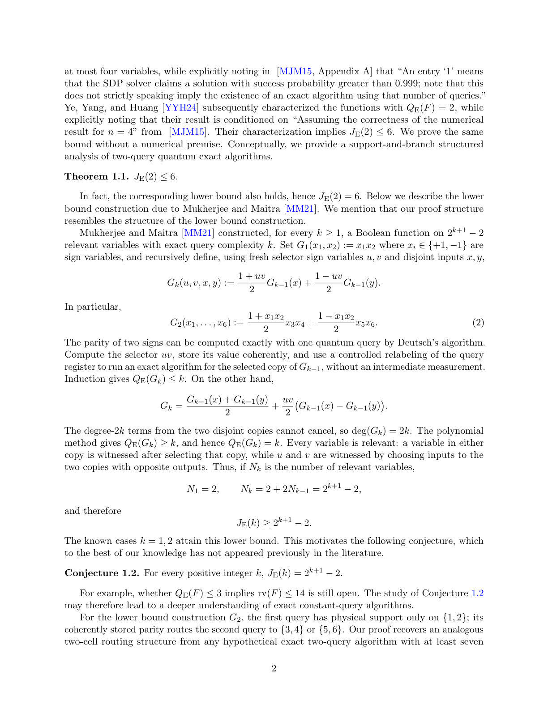
<figcaption class="paper-figure-caption"><b>Fig 1.</b> Low-resolution page preview, page 2</figcaption>
</figure>
<figure class="paper-figure-card">
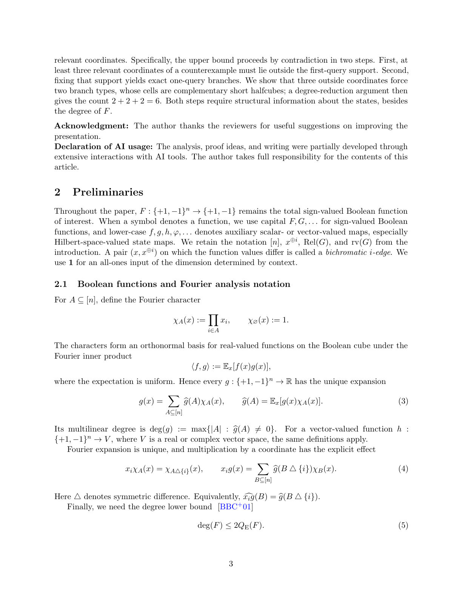
<figcaption class="paper-figure-caption"><b>Fig 2.</b> Low-resolution page preview, page 3</figcaption>
</figure>
<figure class="paper-figure-card">
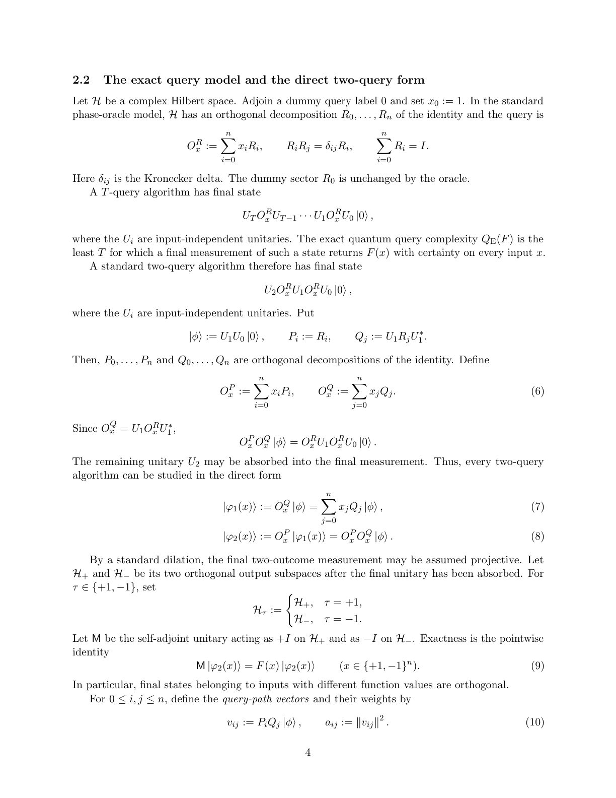
<figcaption class="paper-figure-caption"><b>Fig 3.</b> Low-resolution page preview, page 4</figcaption>
</figure>
<figure class="paper-figure-card">
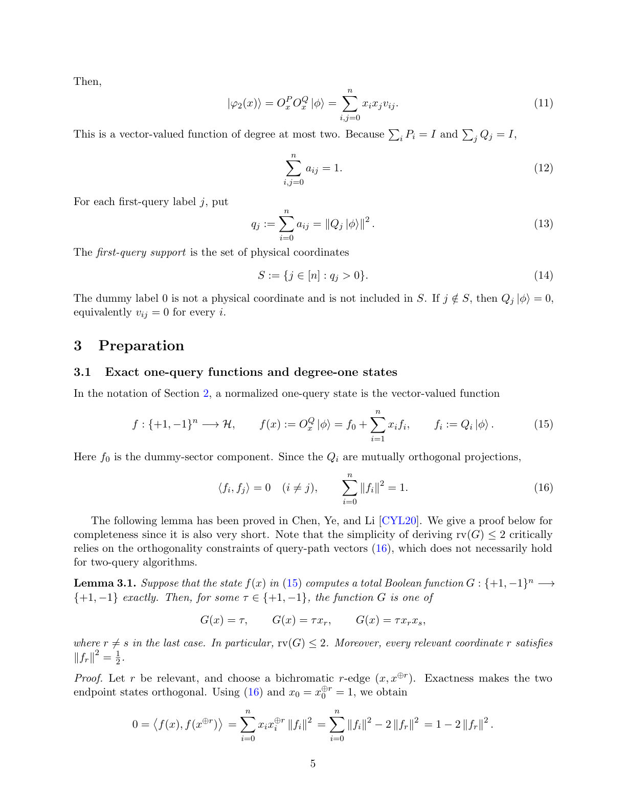
<figcaption class="paper-figure-caption"><b>Fig 4.</b> Low-resolution page preview, page 5</figcaption>
</figure>
<figure class="paper-figure-card">
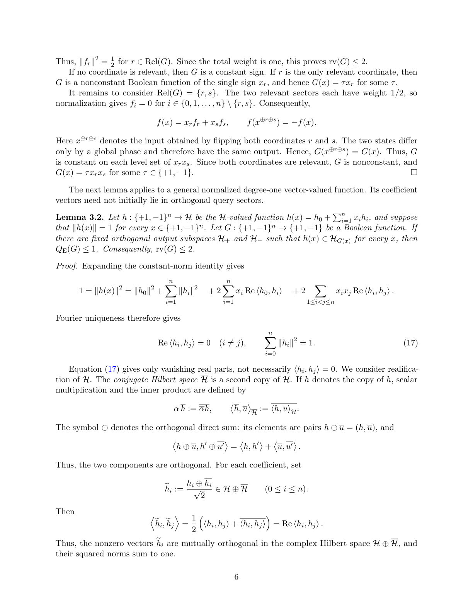
<figcaption class="paper-figure-caption"><b>Fig 5.</b> Low-resolution page preview, page 6</figcaption>
</figure>
</div>

<p><strong>Summary.</strong> This paper analytically proves an upper bound on the number of variables needed for a Boolean function computable by only two quantum queries. It establishes that this number is at most six, providing a rigorous proof where previous methods relied on numerical classifications. The work advances the theoretical understanding of quantum query complexity by developing a novel structural decomposition technique.</p>
<p><strong>Why it may be interesting.</strong> The rigorous mathematical techniques developed for bounding query complexity, especially the structural decomposition, are highly relevant to understanding the limitations and computational power of quantum algorithms in general.</p>
<details>
<summary>Detailed structure</summary>
<p><strong>Main problem.</strong> To provide a direct analytic proof bounding the number of input variables required for a total Boolean function computable exactly with at most two quantum queries.</p>
<p><strong>Main result.</strong> The paper proves that every such function depends on at most six input variables, establishing the bound $ ext{JE}(2) \le 6$ with an unconditional proof.</p>
<p><strong>Method.</strong> The proof uses a structural decomposition of the two-query algorithm, overcoming the difficulty that query-path vectors are not necessarily mutually orthogonal, and bounding the variables based on the support of the first query.</p>
<p><strong>Model / system.</strong> The analysis concerns quantum query complexity ($   ext{QE}(F)$) for a total Boolean function $F: \{+1, -1\}^n 	o \{+1, -1\}$, modeled using query-path vectors and quantum state evolution.</p>
<p><strong>Key observables.</strong> The number of relevant coordinates ($  ext{rv}(F)$) and the quantum query complexity ($  ext{QE}(F)$).</p>
<p><strong>Important parameters / regimes.</strong> The number of queries ($k=2$), the size of the first-query support ($|S|$), and the structure of the resulting one-query branches.</p>
<p><strong>Assumptions / limitations.</strong> The analysis assumes the existence of an exact two-query quantum algorithm for the function $F$.</p>
<p><strong>Paper structure.</strong> The paper builds from analyzing the one-query case (relying on orthogonality) to establishing structural properties of the two-query state. It proceeds by bounding the support size ($|S|$) based on the number of relevant variables ($   ext{rv}(F)$) and then using the structure of the resulting one-query branches to derive the final upper bound.</p>
</details>
<details>
<summary>Abstract</summary>
<p>We give a direct analytic proof that every total Boolean function computable exactly with at most two quantum queries depends on at most six input variables. This bound is sharp. A previous derivation relied on a numerical classification of Boolean functions on at most four variables; to the best of our knowledge, ours is the first unconditional proof. The main difficulty beyond the one-query case is that query-path vectors need not be mutually orthogonal, so interference prevents the scalar weight-counting argument from applying. We overcome this difficulty by establishing a rigid support-and-branch decomposition: after the coordinates in the first-query support are fixed, the second query induces a family of exact one-query branches. This structural description may be of independent interest.</p>
</details>
<p><sub><a href="#top">↑ back to top</a></sub></p>

<p><a id="paper-2610.33319"></a></p>
<h3 id="ubiquity-of-ocular-resonances-in-scattering-phenomena"><a href="http://arxiv.org/abs/2610.33319v1">Ubiquity of ocular resonances in scattering phenomena</a></h3>
<p><strong>Authors:</strong> Cullen Gantenberg, David B. Kaplan<br>
<strong>Type:</strong> theory · <strong>Category:</strong> other · <strong>PDF:</strong> <a href="https://arxiv.org/pdf/2610.33319v1">https://arxiv.org/pdf/2610.33319v1</a><br>
<strong>Analysis basis:</strong> full PDF text, analyzed in chunks
<strong>Topic relevance:</strong> <code>Keldysh / 2PI / non-Gaussian methods</code> <strong>1/5</strong></p>
<div class="figure-strip-hint">↔ Scroll figures horizontally</div>
<div class="paper-figures-scroll">
<figure class="paper-figure-card">
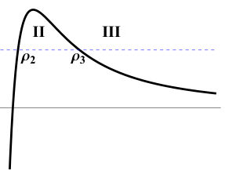
<figcaption class="paper-figure-caption"><b>Fig 1.</b> FIG. 1. The solid black curve is the schematic effective po- tential for an attractive singular potential with turning points ρ2 and ρ3 marked for a particular energy κ2 (dashed).</figcaption>
</figure>
<figure class="paper-figure-card">
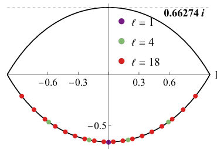
<figcaption class="paper-figure-caption"><b>Fig 2.</b> FIG. 2. Resonance poles for scattering from an infinitely deep square well, plotted in the complex κ-plane for ℓ= 1, 4, 18. Each partial wave exhibits ℓzeros sitting almost ex- actly on the semiclassical Stokes eye (black curve), even for ℓ= 1.</figcaption>
</figure>
<figure class="paper-figure-card">
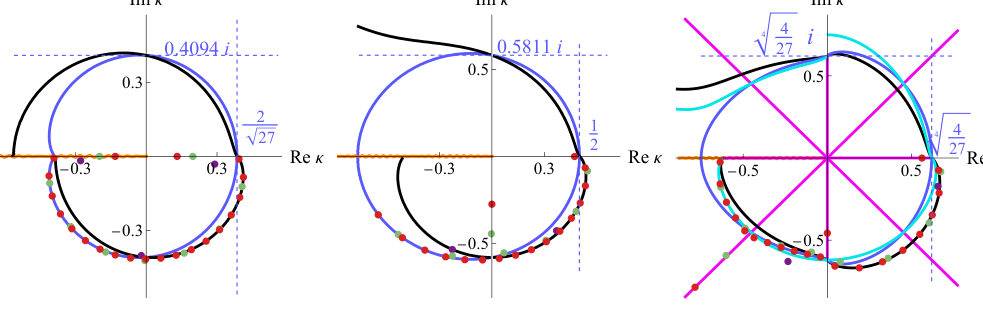
<figcaption class="paper-figure-caption"><b>Fig 3.</b> FIG. 3. The semiclassical Stokes eye determined analytically for the indicated cycles for the attractive 1/r3, 1/r4 and 1/r6</figcaption>
</figure>
</div>

<p><strong>Summary.</strong> This theoretical paper investigates the existence and location of resonances in quantum scattering by analyzing potentials with singular short-range behavior. It introduces the concept of 'ocular resonances,' which are semiclassically predicted to cluster near a Stokes eye in the complex momentum plane. The methodology employs advanced WKB techniques and complex analysis to connect scattering resonances to classical trajectory separatrix surfaces.</p>
<p><strong>Why it may be interesting.</strong> The connection between semiclassical wave phenomena (Stokes lines, WKB) and the discrete spectrum (resonances) in scattering theory is highly relevant to understanding tunneling and barrier penetration in complex quantum systems, which has parallels in AMO physics and quantum optics.</p>
<details>
<summary>Detailed structure</summary>
<p><strong>Main problem.</strong> The paper demonstrates that quantum mechanical scattering off potentials with a characteristic surface generically leads to a family of resonances clustered near an 'eye-shaped curve' in the complex momentum plane.</p>
<p><strong>Main result.</strong> These 'ocular resonances' are shown to be related to the 'creeping wave' phenomenon and are characterized by poles located near the semiclassical Stokes eye in the complex momentum plane.</p>
<p><strong>Method.</strong> The analysis heavily relies on semiclassical WKB approximations, analytic continuation of action integrals through complex turning points, and utilizing Stokes graph theory.</p>
<p><strong>Model / system.</strong> The system is quantum mechanical scattering off a central potential V(r), with specific focus on potentials more singular than 1/r^2 at short distances, where the scattering surface is the classical separatrix.</p>
<p><strong>Key observables.</strong> Resonance poles in the complex momentum plane ($\kappa$), the Stokes eye contour, and the scattering amplitude poles.</p>
<p><strong>Important parameters / regimes.</strong> The potential singularity exponent (e.g., N=3, 4, 6 for $\Omega_\infty(
ho) = -1/
ho^N$), and the angular momentum ($\ell$).</p>
<p><strong>Assumptions / limitations.</strong> The semiclassical description remains quantitatively correct even at low angular momentum, and the topology of the Stokes graph is preserved during analytic continuation.</p>
<p><strong>Figures summary.</strong> Figures illustrate the effective potential, the location of resonance poles relative to the semiclassical Stokes eye for various potentials (e.g., 1/r^3, 1/r^4, 1/r^6), and the geometry of turning points in the complex plane.</p>
<p><strong>Paper structure.</strong> The paper builds from the general concept of ocular resonances via the WKB approximation, applies this to specific singular potentials (like $1/r^N$), derives the resonance condition using matching across complex turning points, and details the calculation using elliptic integrals for solvable cases.</p>
</details>
<details>
<summary>Abstract</summary>
<p>We demonstrate how quantum mechanical scattering off a potential with a characteristic surface generically leads to a family of resonances in the complex momentum plane clustered near a roughly eye-shaped curve centered on the origin and formed by anti-Stokes lines. A particularly interesting class are potentials that are more singular than $1/r^2$ at short distance, where the scattering surface is the separatrix between captured and deflected classical trajectories. These resonances have been recently shown to play an important role in low energy nucleon scattering, and can be related to ``creeping waves'' familiar from classical diffractive scattering and analyzed by means of Regge poles.</p>
</details>
<p><sub><a href="#top">↑ back to top</a></sub></p>
<h2 id="other-papers-39">Other papers (39)</h2>
<p><em>Papers from primary archives without highlighted authors or any topic match. Click to expand.</em></p>
<details>
<summary>Show other papers</summary>

<p><a id="paper-2610.33553"></a></p>
<h3 id="admissible-subspaces-for-the-collective-haar-twirl-schur-weyl-classification-and-heredity-under-tensor-factor-reduction"><a href="http://arxiv.org/abs/2610.33553v1">Admissible Subspaces for the Collective Haar Twirl: Schur-Weyl Classification and Heredity under Tensor-Factor Reduction</a></h3>
<p><strong>Authors:</strong> Sayantan Ganguly<br>
<strong>Type:</strong> theory · <strong>Category:</strong> quantum information and computing · <strong>PDF:</strong> <a href="https://arxiv.org/pdf/2610.33553v1">https://arxiv.org/pdf/2610.33553v1</a><br>
<strong>Analysis basis:</strong> full PDF text, analyzed in chunks</p>
<div class="figure-strip-hint">↔ Scroll figures horizontally</div>
<div class="paper-figures-scroll">
<figure class="paper-figure-card">
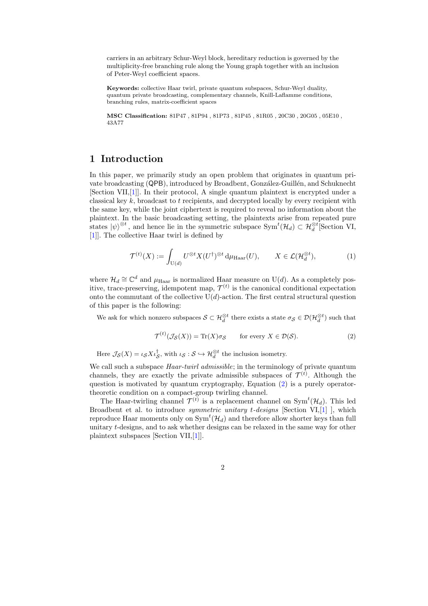
<figcaption class="paper-figure-caption"><b>Fig 1.</b> Low-resolution page preview, page 2</figcaption>
</figure>
<figure class="paper-figure-card">
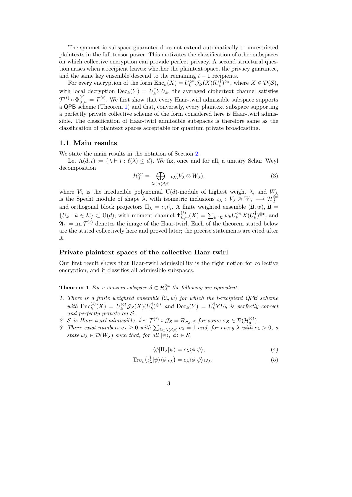
<figcaption class="paper-figure-caption"><b>Fig 2.</b> Low-resolution page preview, page 3</figcaption>
</figure>
<figure class="paper-figure-card">
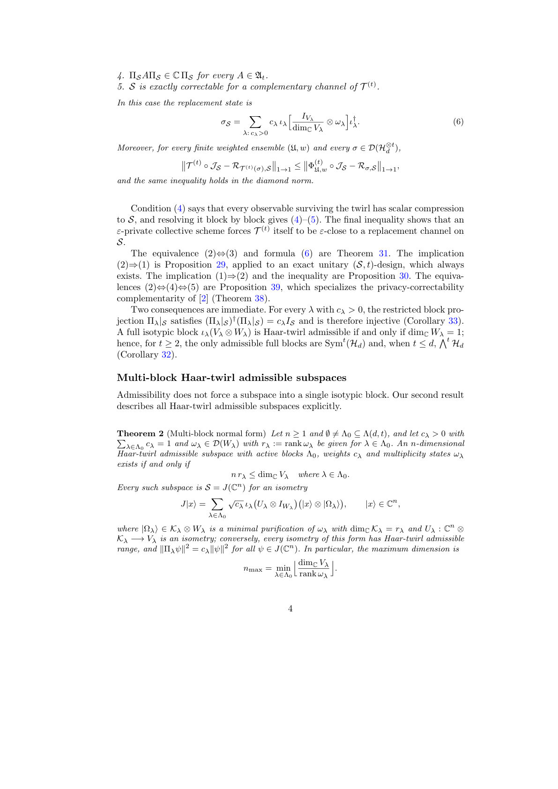
<figcaption class="paper-figure-caption"><b>Fig 3.</b> Low-resolution page preview, page 4</figcaption>
</figure>
<figure class="paper-figure-card">
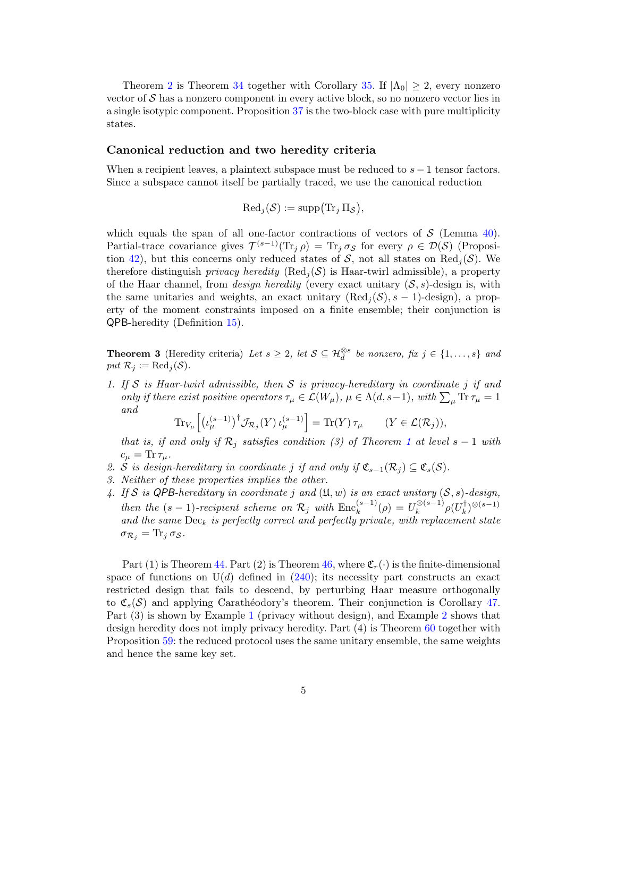
<figcaption class="paper-figure-caption"><b>Fig 4.</b> Low-resolution page preview, page 5</figcaption>
</figure>
<figure class="paper-figure-card">
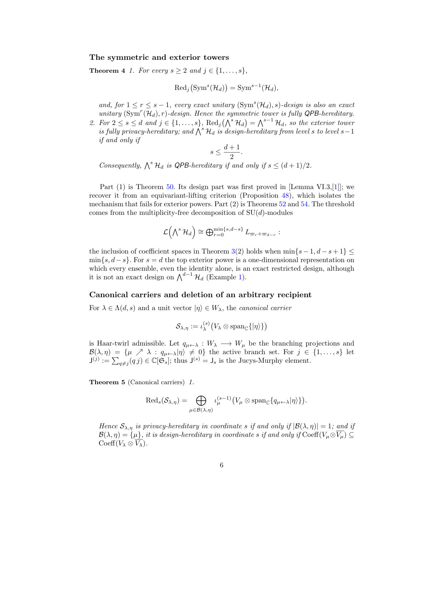
<figcaption class="paper-figure-caption"><b>Fig 5.</b> Low-resolution page preview, page 6</figcaption>
</figure>
</div>
<p><strong>Summary.</strong> This theoretical paper classifies the subspaces that support perfect privacy in Quantum Private Broadcasting using the collective Haar twirl. It achieves this by leveraging Schur-Weyl duality to derive necessary and sufficient algebraic conditions for admissibility. The work also develops a theory of 'heredity,' showing how security properties are preserved when the number of recipients is reduced.</p>
<p><strong>Why it may be interesting.</strong> The rigorous mathematical framework connecting representation theory (Schur-Weyl) to fundamental quantum information tasks like secure broadcasting provides deep structural insights applicable to quantum error correction and resource theories.</p>
<details>
<summary>Detailed structure</summary>
<p><strong>Main problem.</strong> The paper classifies all subspaces supporting perfect privacy in Quantum Private Broadcasting (QPB) by analyzing the structure of the collective Haar twirl operator.</p>
<p><strong>Main result.</strong> The classification yields necessary and sufficient conditions based on Schur-Weyl decomposition, characterizing admissible subspaces through specific trace and structural constraints.</p>
<p><strong>Method.</strong> The authors employ representation theory, specifically Schur-Weyl duality, to translate the physical requirement of QPB security into algebraic constraints on subspaces within the tensor product Hilbert space.</p>
<p><strong>Model / system.</strong> The model is Quantum Private Broadcasting (QPB), analyzed on the tensor power space H^(t*d). The core mathematical tool is the collective Haar twirl operator, T^(t), acting on subspaces S.</p>
<p><strong>Key observables.</strong> Admissible subspaces S, the Haar-twirl operator T^(t), and various measures of 'heredity' (privacy, design, QPB-heredity).</p>
<p><strong>Important parameters / regimes.</strong> The number of recipients (t), the dimension of the local space (d), and the structure of the Young diagrams ($\lambda$) governing the Schur-Weyl decomposition.</p>
<p><strong>Assumptions / limitations.</strong> The analysis heavily relies on the orthogonal direct-sum decomposition of the Hilbert space provided by the Schur-Weyl decomposition.</p>
<p><strong>Figures summary.</strong> Not specified.</p>
<p><strong>Paper structure.</strong> The paper proceeds by establishing equivalent characterizations of Haar-twirl admissible subspaces, deriving the general form of the twirl operator via partial trace properties, and finally characterizing the robustness of these subspaces under the deletion of recipients (heredity).</p>
</details>
<details>
<summary>Abstract</summary>
<p>Quantum private broadcasting (\textsf{QPB}) asks whether a quantum message can be encrypted once, broadcast to several recipients, and decrypted locally while the joint ciphertext reveals no plaintext information. Broadbent, González-Guillén, and Schuknecht showed that the full tensor-power space \(\mathcal H_d^{\otimes t}\) is generally unsuitable for \textsf{QPB}, identified \(\mathrm{Sym}^t(\mathcal H_d)\) as a natural plaintext space, introduced symmetric unitary \(t\)-designs, and asked which other subspaces support private broadcast. Using Schur-Weyl duality, we classify all subspaces \(\mathcal S\subseteq\mathcal H_d^{\otimes t}\) on which the collective Haar twirl \(\mathcal T^{(t)}\) is a replacement channel. Precisely, every Schur-Weyl block weight must be independent of the encoded state, and in each active block \(V_λ\otimes W_λ\), the reduced state on the multiplicity space \(W_λ\) must be fixed. This yields explicit two-block and general multiblock constructions and realizes the classification as the Schur-Weyl form of the Knill-Laflamme conditions for a complementary channel of \(\mathcal T^{(t)}\). We also introduce a canonical reduction under deletion of a recipient and characterize privacy heredity, design heredity, and \textsf{QPB}-heredity for exact restricted designs. The symmetric tower is fully \textsf{QPB}-hereditary, whereas the antisymmetric tower is fully privacy-hereditary and is design-hereditary from level \(s\) to \(s-1\) exactly when \(s\leq(d+1)/2\). For canonical carriers in arbitrary Schur-Weyl blocks, hereditary reduction is governed by multiplicity-free branching along the Young graph and inclusion of the associated Peter-Weyl coefficient spaces.</p>
</details>
<p><sub><a href="#top">↑ back to top</a></sub></p>

<p><a id="paper-2610.34446"></a></p>
<h3 id="ancilla-free-optimal-quantum-adder"><a href="http://arxiv.org/abs/2610.34446v1">Ancilla-free optimal quantum adder</a></h3>
<p><strong>Authors:</strong> Junhong Nie, Jialiang Tang, Xiaoming Sun, Wei Zi<br>
<strong>Type:</strong> theory · <strong>Category:</strong> quantum information and computing · <strong>PDF:</strong> <a href="https://arxiv.org/pdf/2610.34446v1">https://arxiv.org/pdf/2610.34446v1</a><br>
<strong>Analysis basis:</strong> full PDF text, analyzed in chunks</p>
<div class="figure-strip-hint">↔ Scroll figures horizontally</div>
<div class="paper-figures-scroll">
<figure class="paper-figure-card">
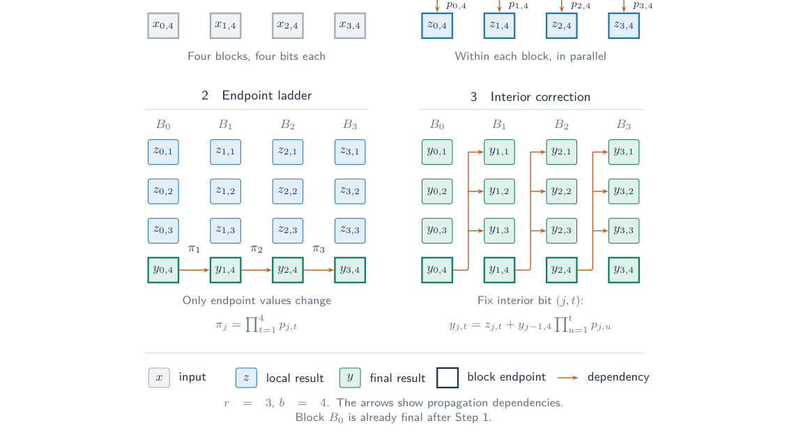
<figcaption class="paper-figure-caption"><b>Fig 1.</b> Figure 1: The block framework with r = 3 and b = 4, so n = 16. Each column represents one block, with its endpoint at the bottom. Arrows show propagation dependencies.</figcaption>
</figure>
<figure class="paper-figure-card">
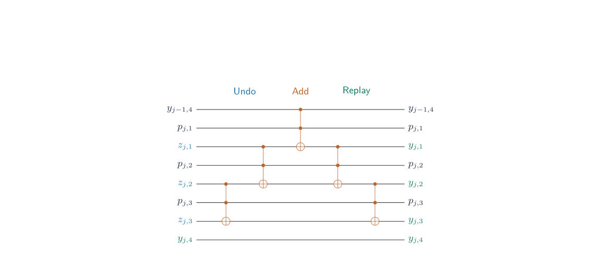
<figcaption class="paper-figure-caption"><b>Fig 2.</b> Figure 2: Interior correction for b = 4 and j ≥1. Undo the two interior gates, add the incoming contribution, and replay the two gates. Both endpoints and all controls are preserved.</figcaption>
</figure>
<figure class="paper-figure-card">
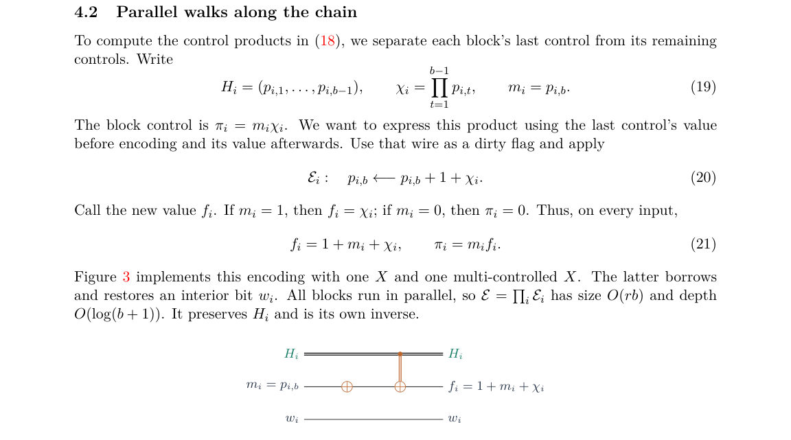
<figcaption class="paper-figure-caption"><b>Fig 3.</b> Figure 3: Using pi,b as a dirty flag for χi. The filled control on Hi tests that all its bits are one. The multi-controlled X borrows and restores wi.</figcaption>
</figure>
<figure class="paper-figure-card">
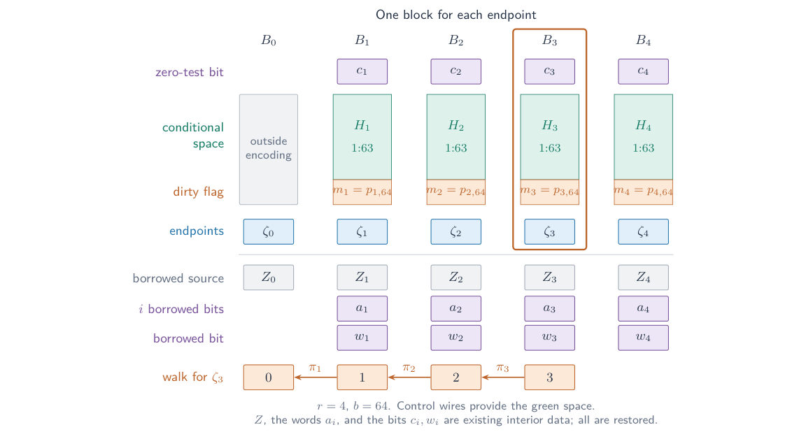
<figcaption class="paper-figure-caption"><b>Fig 4.</b> Figure 4: The chain construction with r = 4, b = 64. The orange wire pi,64 has original value mi and encoded value fi. The green word Hi contains positions 1, . . . , 63. The borrowed bit ci above each block is used for zero tests. Below the endpoints are borrowed interior data: Zi, the word ai of i bits, and wi. The highlighted walk for ζ3 visits 3, 2, 1, 0.</figcaption>
</figure>
<figure class="paper-figure-card">
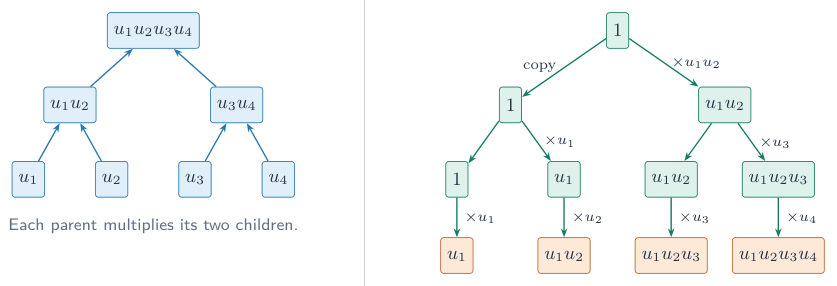
<figcaption class="paper-figure-caption"><b>Fig 5.</b> Figure 5: Computing all running products of four copied inputs. The upward tree computes each interval’s product. In the downward tree, a left child receives its parent’s preceding product and a right child also multiplies the left interval’s product. Multiplying at each leaf gives the four running products. All intermediate bits start at zero; the root preceding product is set to one by X. Each level takes a constant number of gate layers.</figcaption>
</figure>
</div>
<p><strong>Summary.</strong> This paper presents a highly optimized, ancilla-free quantum circuit for addition, achieving linear gate count and logarithmic depth. It achieves this by structuring the addition into manageable blocks and employing advanced techniques like forest map decomposition to minimize resource overhead. This work establishes the asymptotic optimality for quantum arithmetic circuits.</p>
<p><strong>Why it may be interesting.</strong> While focused on computation, the rigorous analysis of circuit depth and resource scaling for fundamental arithmetic operations provides deep insights into the complexity limits of quantum information processing.</p>
<details>
<summary>Detailed structure</summary>
<p><strong>Main problem.</strong> The paper aims to construct an exact, optimal quantum circuit for the $n$-bit quantum adder, $   ext{ADD}_n: (a, b) \mapsto (a, a+b \pmod{2^n})$.</p>
<p><strong>Main result.</strong> They achieve an ancilla-free quantum adder using $O(n)$ gates and $O(\log n)$ depth, matching the known asymptotic lower bounds.</p>
<p><strong>Method.</strong> The construction uses a block framework, decomposing the addition into local ladders, endpoint updates, and interior corrections, optimized via forest map decompositions.</p>
<p><strong>Model / system.</strong> The model is a quantum circuit operating on qubits, utilizing standard gates like X, CNOT, and Toffoli, and requiring classical reversibility.</p>
<p><strong>Key observables.</strong> Gate count ($O(n)$), circuit depth ($O(\log n)$), and ancillary qubit space (zero).</p>
<p><strong>Important parameters / regimes.</strong> The bit length $n$, and the block structure parameters $r$ and $b$.</p>
<p><strong>Assumptions / limitations.</strong> The construction assumes all-to-all connectivity between qubits.</p>
<p><strong>Figures summary.</strong> Figures illustrate the block framework (local ladders, endpoint update, interior correction) and the recursive encoding of interval products using various path traversals.</p>
<p><strong>Paper structure.</strong> The paper builds the adder by first establishing the block structure, then tackling the complex endpoint update using Pascal factorization and echo techniques, and finally optimizing the interior correction via recursive interval product encoding.</p>
</details>
<details>
<summary>Abstract</summary>
<p>We construct an exact $n$-bit quantum adder with $O(n)$ gates and $O(\log n)$ depth that requires no ancillary qubits. The circuit uses only $X$, CNOT, and Toffoli gates under all-to-all connectivity and is classically reversible. Our construction accelerates the controlled ladder underlying addition. Grouping the data into blocks and use existing control qubits as conditional workspace gives a recursive construction with $O(n\log\log n)$ gates and $O(\log n)$ depth. We then coordinate inter-block propagation via two short-path forest operations to cut the per-block workspace requirement, yielding a nonrecursive implementation with $O(n)$ gates. Both the gate count and circuit depth are asymptotically optimal.</p>
</details>
<p><sub><a href="#top">↑ back to top</a></sub></p>

<p><a id="paper-2610.35341"></a></p>
<h3 id="anisotropic-magneto-elastic-coupling-in-the-quasi-2d-ising-magnet-limath1224mathfesiomath1225math-and-thermodynamic-signature-of-low-energy-orbital-excitations"><a href="http://arxiv.org/abs/2610.35341v1">Anisotropic magneto-elastic coupling in the quasi-2D Ising magnet Li$_2$FeSiO$_4$ and thermodynamic signature of low-energy orbital excitations</a></h3>
<p><strong>Authors:</strong> Waldemar Hergett, Kevin Ackermann, Sven Spachmann, Martin Jonak, Mahmoud Abdel-Hafiez, Hend Shahed, Michael Merz, Maurits W. Haverkort, Rüdiger Klingeler<br>
<strong>Type:</strong> both · <strong>Category:</strong> other · <strong>PDF:</strong> <a href="https://arxiv.org/pdf/2610.35341v1">https://arxiv.org/pdf/2610.35341v1</a><br>
<strong>Analysis basis:</strong> full PDF text, analyzed in chunks</p>
<div class="figure-strip-hint">↔ Scroll figures horizontally</div>
<div class="paper-figures-scroll">
<figure class="paper-figure-card">
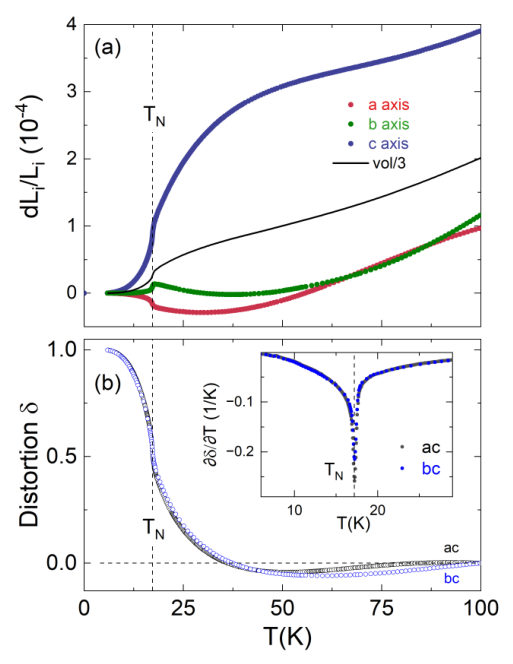
<figcaption class="paper-figure-caption"><b>Fig 1.</b> Figure 1. (a) Relative length changes, dLi(T)/Li (i = a, b, c), of Li2FeSiO4. The solid black line denotes the volume expan- sion dLvol/Lvol = 1/3×∑</figcaption>
</figure>
<figure class="paper-figure-card">
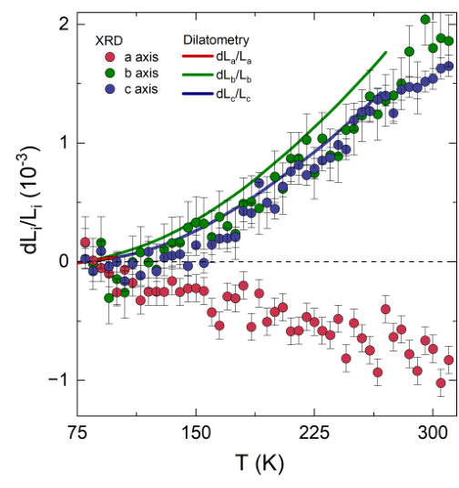
<figcaption class="paper-figure-caption"><b>Fig 2.</b> Figure 2. Relative length changes, dLi(T)/Li (i = a, b, c), above 80 K as obtained from XRD and dilatometry. The da- shed line indicates αi(T ≥80 K) = 0 K−1.</figcaption>
</figure>
<figure class="paper-figure-card">
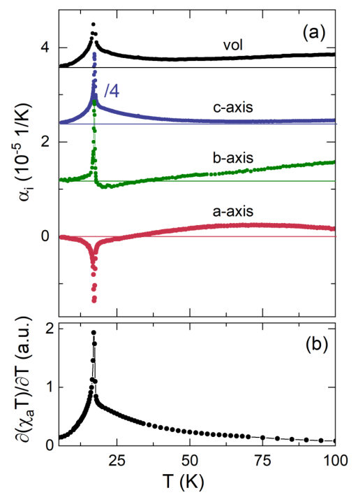
<figcaption class="paper-figure-caption"><b>Fig 3.</b> Figure 3. (a) Uniaxial thermal expansion coefficients αi (i = a, b, c, volume). αc has been divided by 4. The data have been shifted vertically by 1.2 × 10−5/K for clarity; horizontal lines show αi = 0 for each data set. (b) Fisher’s specific heat ∂(χaT)/∂T as derived from the static magnetic susceptibility χa = M/B at B = 1 T applied along the easy magnetic a axis [33].</figcaption>
</figure>
<figure class="paper-figure-card">
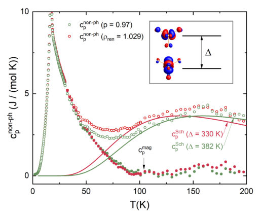
<figcaption class="paper-figure-caption"><b>Fig 4.</b> Figure 4. Separation of the non-phononic contributions cnon−ph p (i.e., the comprised magnetic and orbital specific heat) to the specific heat (open circles). Red data: cnon−ph p obtained by subtracting cLi2ZnSiO4 p from the measured speci- fic heat using Debye scaling with ρD ≈1.029 (see the text). The red line is a fit to the high-temperature regime of the thus obtained cnon−ph p by means of the Schottky model, resulting in the energy gap ∆= 330 K. Green data: The line represents cSch p calculated by Eq. 1 using the DFT result ∆= 382 K [34]. This cSch p was used to determine the scaling factor p = 0.97 so that cnon−ph p = cSch p + cmag p (i.e., cnon−ph p ≈cSch p in the regime where the...</figcaption>
</figure>
<figure class="paper-figure-card">
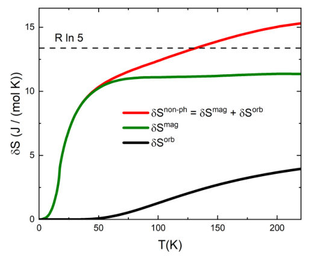
<figcaption class="paper-figure-caption"><b>Fig 5.</b> Figure 5. Temperature dependence of the entropy changes ob- tained by integrating the heat-capacity contributions shown in Fig. 4. The total non-phononic entropy changes, δSnon-ph = δSmag + δSorb, are shown in red. The green curve represents the magnetic entropy changes, δSmag, obtained by integrating cnon−ph p -cSch p , while the black curve shows the corresponding</figcaption>
</figure>
</div>
<p><strong>Summary.</strong> This work thoroughly investigates the coupled spin, lattice, and orbital physics in the magnet Li2FeSiO4. By combining dilatometry and specific heat measurements with DFT theory, the authors quantify the orbital energy gap and precisely map the anisotropic magneto-elastic coupling responsible for the magnetic transition. The findings provide a detailed picture of how electronic structure dictates macroscopic material properties under strain and temperature.</p>
<p><strong>Why it may be interesting.</strong> The detailed separation of orbital excitations from magnetic and lattice contributions using thermodynamic analysis is highly relevant for understanding strongly correlated materials where multiple degrees of freedom interact.</p>
<details>
<summary>Detailed structure</summary>
<p><strong>Main problem.</strong> The study investigates the complex interplay between spin, lattice, and orbital degrees of freedom in the quasi-2D Ising magnet Li2FeSiO4.</p>
<p><strong>Main result.</strong> The research successfully quantifies the orbital energy gap ($\Delta \sim 300-350$ K) and determines the anisotropic magneto-elastic coupling constants governing the magnetic transition temperature ($T_N$).</p>
<p><strong>Method.</strong> The authors combine extensive experimental measurements (thermal expansion, specific heat) with theoretical DFT calculations and thermodynamic analysis (Grüneisen analysis) to separate contributions.</p>
<p><strong>Model / system.</strong> The physical system is the quasi-2D Ising-like magnet Li2FeSiO4, whose magnetic and structural properties are analyzed relative to its non-magnetic analog, Li2ZnSiO4.</p>
<p><strong>Key observables.</strong> Thermal expansion coefficients ($\alpha_i$), specific heat components ($c_{	ext{mag}}, c_{	ext{orb}}, c_{	ext{ph}}$), orbital energy gap ($\Delta$), and critical exponents ($   ilde{\alpha}_{cp}$).</p>
<p><strong>Important parameters / regimes.</strong> Magnetic ordering temperature ($T_N \approx 17.2 	ext{ K}$), pressure dependence of $\Delta$ ($\partial \ln \Delta / \partial p \approx -4.6 \%/	ext{GPa}$), and anisotropic strain dependencies of $T_N$.</p>
<p><strong>Assumptions / limitations.</strong> The analysis relies on separating phonon, magnetic, and orbital contributions to the specific heat, favoring Debye scaling over purely phenomenological approaches.</p>
<p><strong>Figures summary.</strong> Figures illustrate relative length changes along $a, b, c$ axes, the decomposition of non-phonon specific heat into Schottky and magnetic parts, and the temperature dependence of various thermodynamic quantities.</p>
<p><strong>Paper structure.</strong> The paper proceeds by first characterizing the anisotropic thermal expansion and magneto-elastic coupling at $T_N$, then decomposing the specific heat into phonon, magnetic, and orbital contributions, and finally using pressure and temperature dependence analyses to quantify the orbital gap and coupling constants.</p>
</details>
<details>
<summary>Abstract</summary>
<p>The relevance of spin, lattice and orbital degrees of freedom in the quasi-2D Ising-like magnet Li$_2$FeSiO$_4$ is demonstrated by thermal expansion and specific heat measurements supported by numerical studies. By means of thermodynamic and Grüneisen analysis, we separate the orbital signatures and quantify the energy gap and its pressure dependence from the experimental data as $Δ\sim 300 - 350$ K and $\partial \ln Δ/\partial p_{\rm c} \approx -4.6$ %/GPa). Both values excellently agree with the theoretical DFT predictions. The thermal expansion anomalies associated with the onset of long-range magnetic order imply significant magneto-elastic coupling and are used to determine the anisotropic uniaxial strain dependencies of $T_{\rm N}$. They are dominated by the in-plane (i.e., $c$ axis) response $(\partial \ln{ T_{\rm N}} )/\partial p_{\rm c} \simeq 15$ %/GPa while the (negative) $a$ axis and (positive) out-of-plane ($b$ axis) pressure dependencies are much smaller. Short-range magnetic order extends well above $T_{\rm N}$ but is not driven by the same energy scale as $T_{\rm N}$ as evidenced by the observation of non-monotonic in-plane distortion, sign-change of the Grüneisen parameter, and failure of Grüneisen scaling.</p>
</details>
<p><sub><a href="#top">↑ back to top</a></sub></p>

<p><a id="paper-2610.35205"></a></p>
<h3 id="basis-set-error-bounds-for-first-quantised-quantum-simulation-of-chemistry"><a href="http://arxiv.org/abs/2610.35205v1">Basis-set error bounds for first-quantised quantum simulation of chemistry</a></h3>
<p><strong>Authors:</strong> Dominic W. Berry, Arkin Tikku, Sophia Simon, Ryan Babbush<br>
<strong>Type:</strong> theory · <strong>Category:</strong> strongly correlated electrons · <strong>PDF:</strong> <a href="https://arxiv.org/pdf/2610.35205v1">https://arxiv.org/pdf/2610.35205v1</a><br>
<strong>Analysis basis:</strong> full PDF text, analyzed in chunks</p>
<div class="figure-strip-hint">↔ Scroll figures horizontally</div>
<div class="paper-figures-scroll">
<figure class="paper-figure-card">
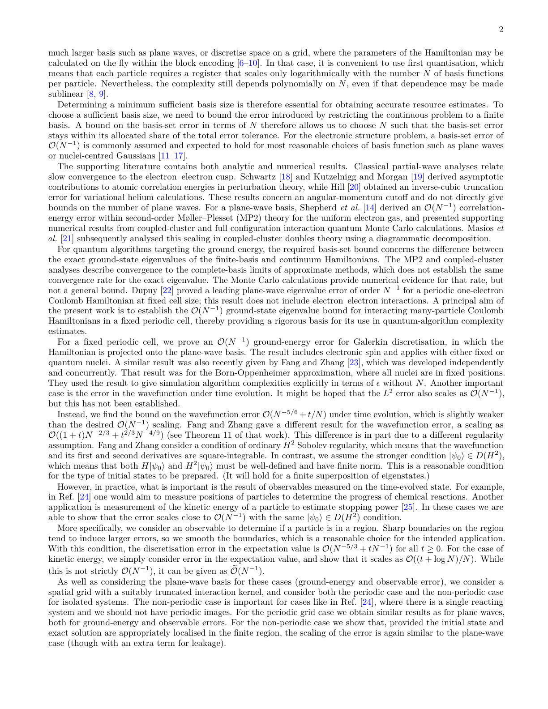
<figcaption class="paper-figure-caption"><b>Fig 1.</b> Low-resolution page preview, page 2</figcaption>
</figure>
<figure class="paper-figure-card">
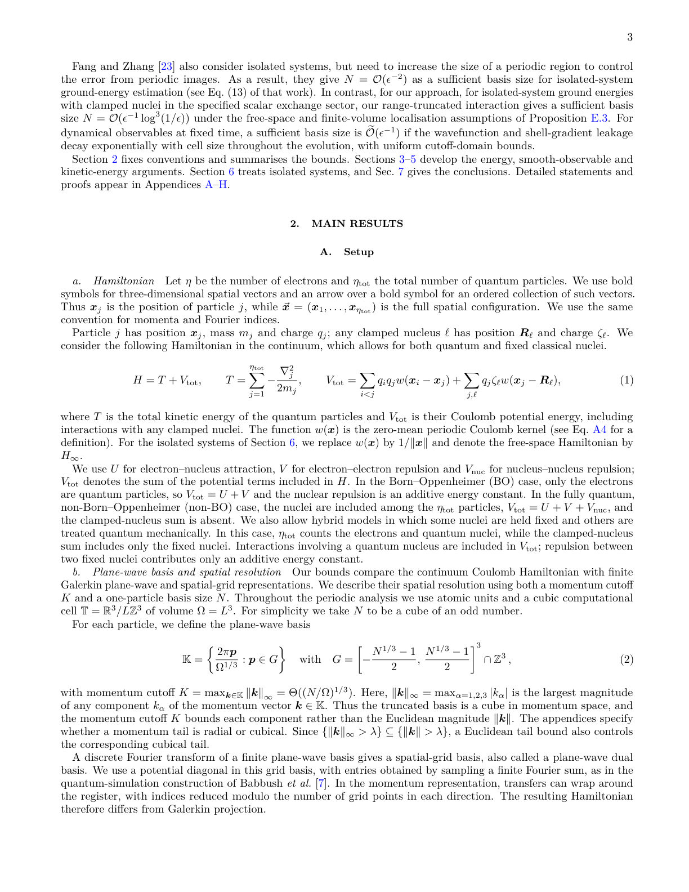
<figcaption class="paper-figure-caption"><b>Fig 2.</b> Low-resolution page preview, page 3</figcaption>
</figure>
<figure class="paper-figure-card">
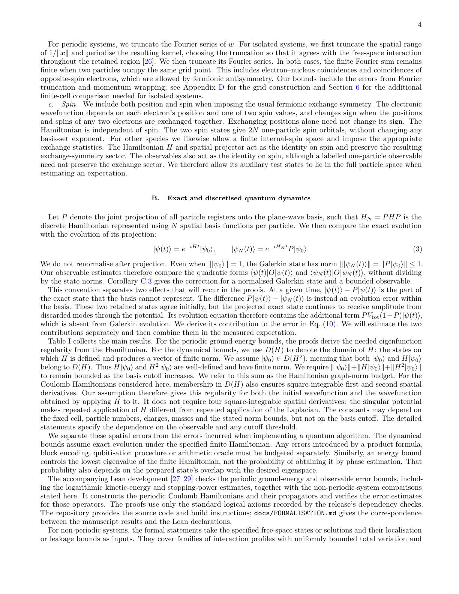
<figcaption class="paper-figure-caption"><b>Fig 3.</b> Low-resolution page preview, page 4</figcaption>
</figure>
<figure class="paper-figure-card">
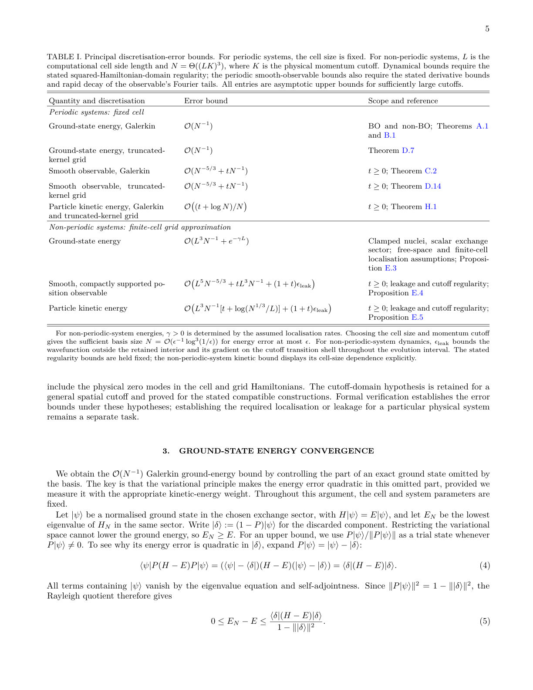
<figcaption class="paper-figure-caption"><b>Fig 4.</b> Low-resolution page preview, page 5</figcaption>
</figure>
<figure class="paper-figure-card">

<figcaption class="paper-figure-caption"><b>Fig 5.</b> Low-resolution page preview, page 6</figcaption>
</figure>
</div>
<p><strong>Summary.</strong> This work provides rigorous mathematical proofs for the convergence rate of quantum simulations of chemistry when using finite basis sets. It demonstrates that the error in the ground energy and several key observables scales as $O(N^{-1})$, which is a critical theoretical result for implementing quantum algorithms for electronic structure calculations.</p>
<p><strong>Why it may be interesting.</strong> The rigorous derivation of $O(N^{-1})$ convergence rates for key observables is crucial for designing and benchmarking quantum algorithms for chemistry, providing theoretical guarantees for resource estimation.</p>
<details>
<summary>Detailed structure</summary>
<p><strong>Main problem.</strong> The paper establishes rigorous error bounds for the basis-set error when using first-quantized quantum simulation methods to calculate the electronic structure of chemical systems.</p>
<p><strong>Main result.</strong> The error in the ground energy is shown to scale as $O(N^{-1})$ for both plane-wave and spatial grid bases, confirming the expected convergence rate for many relevant quantum algorithms.</p>
<p><strong>Method.</strong> The analysis involves comparing continuum Hamiltonian results with finite basis set representations (plane waves and spatial grids) and deriving asymptotic error bounds for various observables and time evolution.</p>
<p><strong>Model / system.</strong> The system is quantum simulation of chemistry, modeled by many-particle Coulomb Hamiltonians. The analysis covers both periodic (fixed cell) and non-periodic (isolated) boundary conditions.</p>
<p><strong>Key observables.</strong> Ground energy, error in the state itself during time evolution, and errors in observables like the smoothed particle position and kinetic energy.</p>
<p><strong>Important parameters / regimes.</strong> Basis size ($N$), time ($t$), momentum cutoff ($K$), and the scaling factor $\epsilon$ (related to the error tolerance).</p>
<p><strong>Assumptions / limitations.</strong> The analysis assumes the initial state satisfies strong regularity conditions (e.g., $|\psi_0
angle \in D(H^2)$) and that the system's evolution remains well-behaved near boundaries for non-periodic cases.</p>
<p><strong>Figures summary.</strong> The notes mention TABLE I summarizing principal discretization-error bounds for both periodic and non-periodic systems, detailing bounds for ground-state energy and smooth observables.</p>
<p><strong>Paper structure.</strong> The paper develops the error analysis by first establishing bounds for the ground state, then extending these bounds to time evolution, and finally addressing the specific challenges posed by non-periodic boundary conditions and various observables.</p>
</details>
<details>
<summary>Abstract</summary>
<p>In quantum simulation of electronic structure it is often expected that the estimate of the ground energy converges to the continuum basis limit at a rate of $\mathcal O(N^{-1})$ for a basis of size $N$. This has been found in analytical and numerical studies, but without a rigorous treatment of the error in the quantities considered in quantum algorithms. Here we show the $\mathcal O(N^{-1})$ scaling of the error for a wide range of cases needed for quantum simulation of chemistry. We show the error in the ground energy scales as $\mathcal O(N^{-1})$ for plane-wave as well as spatial grid bases. For the spatial grid we consider both a periodic system and a non-periodic system with open boundaries. For time evolution, our bound on the error in the state itself is weaker than $\mathcal O(N^{-1})$, but we show that the error in observables scales as $\widetilde{\mathcal O}(N^{-1})$ in important cases. In particular, we may consider a smoothed observable that describes the position of particles. We show that this error scales as $\mathcal O(N^{-5/3}+tN^{-1})$ for time $t$, again both for plane-wave and spatial grid bases. For the non-periodic grid case we use a condition that the true evolution would not result in significant leakage past the boundaries, which introduces basis error unrelated to the resolution of the discretisation. We also show the error in the kinetic energy of a particle scales as $\mathcal O((t+\log N)/N)$ for the plane-wave and grid bases. Together, these results show that $\mathcal O(N^{-1})$ scaling of the error holds for many of the relevant cases for quantum algorithms (with a trivial log factor for kinetic energy).</p>
</details>
<p><sub><a href="#top">↑ back to top</a></sub></p>

<p><a id="paper-2610.35699"></a></p>
<h3 id="bell-pair-distillation-under-imperfect-operations"><a href="http://arxiv.org/abs/2610.35699v1">Bell-pair distillation under imperfect operations</a></h3>
<p><strong>Authors:</strong> András Kinyó, Tamás Kiss, Orsolya Kálmán<br>
<strong>Type:</strong> theory · <strong>Category:</strong> quantum information and computing · <strong>PDF:</strong> <a href="https://arxiv.org/pdf/2610.35699v1">https://arxiv.org/pdf/2610.35699v1</a><br>
<strong>Analysis basis:</strong> full PDF text, analyzed in chunks</p>
<div class="figure-strip-hint">↔ Scroll figures horizontally</div>
<div class="paper-figures-scroll">
<figure class="paper-figure-card">

<figcaption class="paper-figure-caption"><b>Fig 1.</b> Figure 1. Circuit corresponding to one iteration of the pro- tocol. In the presence of gate noise, noise channels E and K act on qubits (1, 2) and (3, 4), respectively. (Figure adapted from [27].)</figcaption>
</figure>
<figure class="paper-figure-card">

<figcaption class="paper-figure-caption"><b>Fig 2.</b> Figure 2. Fidelity of the output state with respect to |Φ+⟩ after successive protocol iterations for the input state ρ0(ε = 0.2). Each curve corresponds to a different value of the depo- larization parameter λ. A red dotted line shows the noiseless case (λ = 0).</figcaption>
</figure>
<figure class="paper-figure-card">

<figcaption class="paper-figure-caption"><b>Fig 3.</b> Figure 3. Change in the fidelity (δF) after four itera- tions of the protocol, starting from input states with differ- ent ε and including depolarization noise of varying strength (D(λ) ⊗D(λ)). The critical depolarization parameter curve, λc(ε), corresponding to δF = 0, is highlighted with a yellow curve. The inset shows the parameter region corresponding to realistic devices as well as some specific examples (see refer- ences in the legend). Note that axes of the inset have different aspect ratios compared to those of the main figure. The effec- tive error parameters were estimated as detailed in App. A.</figcaption>
</figure>
<figure class="paper-figure-card">

<figcaption class="paper-figure-caption"><b>Fig 4.</b> Figure 4. Change in the fidelity (δF) after four iterations for a fixed input state with white-noise parameter ε = 0.2. An asymmetric depolarization channel was employed with pa- rameters λA and λB. The yellow curve corresponds to δF = 0.</figcaption>
</figure>
<figure class="paper-figure-card">

<figcaption class="paper-figure-caption"><b>Fig 5.</b> Figure 5. δF = 0 curves on the (λA, λB) plane, corresponding to no enhancement in fidelity after four steps, in the presence of asymmetric depolarization errors, for different values of input white noise ε. The curves are aligned with λA + λB = 2λ∗(ε). The inset in the upper-right corner shows λ∗(ε) as a function of ε.</figcaption>
</figure>
</div>
<p><strong>Summary.</strong> This work rigorously analyzes the resilience of a Bell-pair entanglement distillation protocol against various physical noise sources, including gate errors and readout imperfections. By quantifying the fidelity degradation under different error models, the authors map out the operational regimes where the protocol remains beneficial. This provides essential theoretical guidelines for building fault-tolerant quantum communication systems.</p>
<p><strong>Why it may be interesting.</strong> The detailed analysis of error resilience in fundamental quantum protocols like entanglement distillation is crucial for designing practical quantum communication networks and quantum computing hardware.</p>
<details>
<summary>Detailed structure</summary>
<p><strong>Main problem.</strong> The paper investigates how robust an entanglement distillation protocol is when subjected to various imperfections in its physical implementation.</p>
<p><strong>Main result.</strong> The protocol remains effective over substantial error ranges, but its robustness critically depends on the specific type of error modeled, and specific conditions must be met for the success probability to be enhanced.</p>
<p><strong>Method.</strong> The analysis uses the quantum channel formalism to model incoherent and coherent gate errors, calculating the resulting fidelity and success probability after one or multiple distillation iterations.</p>
<p><strong>Model / system.</strong> The system involves distilling a maximally entangled Bell pair from multiple copies of an unknown two-qubit state using Local Operations and Classical Communication (LOCC). Errors are modeled using Kraus operators for both incoherent and coherent noise channels.</p>
<p><strong>Key observables.</strong> Fidelity of the output state relative to the target Bell state, and the enhancement in fidelity ($\delta F$) compared to the input state.</p>
<p><strong>Important parameters / regimes.</strong> Noise parameters such as depolarization ($\lambda$), amplitude damping ($\gamma$), and the input state noise strength ($\epsilon$).</p>
<p><strong>Assumptions / limitations.</strong> The analysis often restricts attention to specific input state forms (e.g., $
ho_0(\epsilon)$) and sometimes assumes the input state is Bell diagonal ($
ho_{    ext{BD}}$) for certain symmetry analyses.</p>
<p><strong>Figures summary.</strong> Figures illustrate the fidelity evolution versus noise strength ($\lambda$) for different error models, and show the parameter regimes where the distillation process yields a positive fidelity enhancement ($\delta F > 0$).</p>
<p><strong>Paper structure.</strong> The paper systematically analyzes robustness by dedicating sections to incoherent errors, coherent gate errors, readout errors, and finally examining the combined effects of these various noise sources.</p>
</details>
<details>
<summary>Abstract</summary>
<p>We recently proposed an entanglement distillation protocol based on local operations and classical communication that probabilistically and universally distills a maximally entangled Bell pair from multiple copies of an unknown two-qubit state [Phys. Rev. Lett. 135, 260202 (2025)]. Here, we investigate the robustness of this protocol against imperfections in its implementation. We consider several incoherent and coherent gate-error models, as well as measurement readout errors, and determine the regimes in which distillation enhances the fidelity with the target Bell state. We find that the protocol remains effective over substantial error ranges, although its robustness depends strongly on the type of error. We further analyze asymmetric errors between the two parties and identify conditions under which complementary postselection outcomes yield identical distillation dynamics, allowing the success probability to be enhanced.</p>
</details>
<p><sub><a href="#top">↑ back to top</a></sub></p>

<p><a id="paper-2610.35478"></a></p>
<h3 id="benchmarking-quantum-annealing-based-approaches-for-factory-layout-planning"><a href="http://arxiv.org/abs/2610.35478v1">Benchmarking quantum-annealing-based approaches for factory layout planning</a></h3>
<p><strong>Authors:</strong> Xiangqian Wu, Philipp Schworm, Marcel Wagner, Jan C. Aurich<br>
<strong>Type:</strong> theory · <strong>Category:</strong> other · <strong>PDF:</strong> <a href="https://arxiv.org/pdf/2610.35478v1">https://arxiv.org/pdf/2610.35478v1</a><br>
<strong>Analysis basis:</strong> full PDF text, analyzed in chunks</p>
<div class="figure-strip-hint">↔ Scroll figures horizontally</div>
<div class="paper-figures-scroll">
<figure class="paper-figure-card">

<figcaption class="paper-figure-caption"><b>Fig 1.</b> Figure 1: Framework for QA-based factory layout planning.</figcaption>
</figure>
<figure class="paper-figure-card">

<figcaption class="paper-figure-caption"><b>Fig 2.</b> Figure 2: Geometry of layout and functional units.</figcaption>
</figure>
<figure class="paper-figure-card">

<figcaption class="paper-figure-caption"><b>Fig 3.</b> Figure 3: Layout variants with different transport routes.</figcaption>
</figure>
<figure class="paper-figure-card">

<figcaption class="paper-figure-caption"><b>Fig 4.</b> Figure 4: Normalized deviation from the minimal transport intensity among all approaches.</figcaption>
</figure>
<figure class="paper-figure-card">

<figcaption class="paper-figure-caption"><b>Fig 5.</b> Figure 5: Computation times of all approaches.</figcaption>
</figure>
</div>
<p><strong>Summary.</strong> This paper benchmarks four quantum-annealing-based approaches for solving the complex factory layout planning problem. By comparing these QA methods against classical optimization algorithms, the authors show that QA techniques offer significant speedups and competitive solution quality. The findings establish a strong case for applying quantum computing to industrial combinatorial optimization challenges.</p>
<p><strong>Why it may be interesting.</strong> While the application is industrial optimization, the core methodology involves mapping a complex combinatorial problem onto a Hamiltonian structure suitable for quantum annealing, which is relevant to understanding quantum optimization algorithms.</p>
<details>
<summary>Detailed structure</summary>
<p><strong>Main problem.</strong> The paper addresses the NP-hard combinatorial optimization problem of factory layout planning, aiming to minimize operational costs and maximize efficiency.</p>
<p><strong>Main result.</strong> Quantum annealing (QA) based approaches demonstrate competitive solution quality and substantial computational advantages, reducing computation time by up to 94.51% compared to classical metaheuristics.</p>
<p><strong>Method.</strong> The authors benchmark four distinct QA-based formulations (IBQM, HDQM, HCQM, HNLM) against classical methods like GA, PSO, and Tabu Search.</p>
<p><strong>Model / system.</strong> The problem is formulated as an energy minimization problem encoded into a Hamiltonian, which is solved using various hybrid quantum and classical solvers (e.g., Leap Hybrid Solvers).</p>
<p><strong>Key observables.</strong> Solution quality (minimum transport intensity), computation time, and scalability.</p>
<p><strong>Important parameters / regimes.</strong> Layout size, geometric complexity, spatial restrictions, and transport route configurations across 14 benchmark instances.</p>
<p><strong>Assumptions / limitations.</strong> The comparison assumes that the performance gap between QA and classical methods persists across varying industrial problem characteristics.</p>
<p><strong>Figures summary.</strong> Figures compare the normalized deviation from minimal transport intensity and the computation time across all tested approaches.</p>
<p><strong>Paper structure.</strong> The paper introduces the problem, reviews existing QA and classical methods, develops and refines four specific QA models, and concludes with a systematic benchmarking analysis comparing all approaches.</p>
</details>
<details>
<summary>Abstract</summary>
<p>The earlystage of factory layout planning has a direct effect on the operating costs, efficiency, and productivity of manufacturing systems. Conventional automated planning approaches often face a trade-off between solution quality and computational effort. Recent studies have investigated the potential of quantum annealing (QA) for solving factory layout planning problems. However, existing studies have mainly focused on individual QA-based formulations, whereas current hybrid QA solvers support multiple model types that combine QA and classical methods. To explore the potential of QA for factory layout planning, this paper benchmarks four QA based approaches implemented with the corresponding solvers, including an iterative binary quadratic model (IBQM), a hybrid discrete quadratic model (HDQM), a hybrid constrained quadratic model (HCQM), and a hybrid nonlinear model (HNLM). To improve scalability, an iterative decomposition strategy is developed for IBQM, while a candidate selection procedure is introduced for HDQM. The approaches are benchmarked against genetic algorithm, particle swarm optimization, and a hybrid tabu search and simulated annealing approach on 14 layout instances with different layout sizes, geometric complexity, spatial restrictions, and transport route configurations. The comparative analysis considers solution quality, computation time, and scalability. The results show that QA-based approaches achieve competitive solution quality and substantial computational advantages, reducing computation time by up to 94.51% relative to the classical reference methods. Among them, IBQM obtains the best solution quality in 78.6% of the instances, with a maximum improvement of 17.41% associated with an 81.34% reduction in computation time. These findings provide a basis for their further application in industrial layout planning.</p>
</details>
<p><sub><a href="#top">↑ back to top</a></sub></p>

<p><a id="paper-2610.35855"></a></p>
<h3 id="collinear-and-coplanar-altermagnetism-in-a-penrose-quasicrystal"><a href="http://arxiv.org/abs/2610.35855v1">Collinear and Coplanar Altermagnetism in a Penrose Quasicrystal</a></h3>
<p><strong>Authors:</strong> Bai-He Yao, Zhi-Yan Shao, Ye Cao, Fan Yang<br>
<strong>Type:</strong> theory · <strong>Category:</strong> strongly correlated electrons · <strong>PDF:</strong> <a href="https://arxiv.org/pdf/2610.35855v1">https://arxiv.org/pdf/2610.35855v1</a><br>
<strong>Analysis basis:</strong> full PDF text, analyzed in chunks</p>
<div class="figure-strip-hint">↔ Scroll figures horizontally</div>
<div class="paper-figures-scroll">
<figure class="paper-figure-card">

<figcaption class="paper-figure-caption"><b>Fig 1.</b> FIG. 1. (a) A view of the Penrose tiling, with the rhombus edge length a highlighted in red. (b) Symmetry classes of the leading susceptibility eigenvector as a function of the chemical potential µ. The horizontal axis distinguishes the 1D IRRPs A1 and A2 from the 2D IRRPs E1 and E2.</figcaption>
</figure>
<figure class="paper-figure-card">

<figcaption class="paper-figure-caption"><b>Fig 2.</b> FIG. 2. Collinear magnetic order belonging to the E2 IRRP and its observable signatures at µ = −0.4. The observables reflect the symmetry of the magnetic order. (a,b) Real-space patterns A and B, respectively, cropped to a central disk of diameter 7a from the full diameter-28a patch. (c) The sARPES of pattern A at ω = −0.05t0. (d) Spin conductance of pattern A. Panels (c,d) show the spin split feature.</figcaption>
</figure>
<figure class="paper-figure-card">

<figcaption class="paper-figure-caption"><b>Fig 3.</b> FIG. 3. Coplanar magnetic order in the E1 IRRP and its signatures at µ = −0.3. (a) Mirror-even ξ(1) (red, spin-x) and mirror-odd ξ(2) (blue, spin-y) components on the same site. (b) Coplanar pattern C, with arrow directions and colors indicating spin orientations and moment magnitudes, respectively. Panels (a,b) use the same central crop as Fig. 2(a,b). (c–e) sARPES along the x, y, and z spin axes at ω = −0.05t0, respectively. With the reference mirror M along the spatial x axis, the spin split is mirror-even in (c), mirror-odd in (d), and fivefold-rotation invariant in (e). (f–h) Angle-dependent conductance resolved along the x, y, and z spin axes, respectively. Red solid and blue dashed...</figcaption>
</figure>
<figure class="paper-figure-card">

<figcaption class="paper-figure-caption"><b>Fig 4.</b> Fig. 3(b) shows the resultant magnetic pattern, with mag- netic moments on different sites pointing toward different directions within the spin-xy plane, forming a coplanar AM state. In this coplanar state, although no point-group operation can globally flip the spin pattern to ensure zero magnetism, magnetic compensation follows from the spe- cial group-theory-orthogonality theorem, distinguishing it from conventional AM states. Figs. 3(c-e) clearly exhibit spin splitting in the sARPES, verifying the AM character. The x-resolved and y-resolved sARPES are mirror-even and odd respectively, correspond- ing to the symmetry of their magnetic patterns ξ(1) and ξ(2). Also this mirror-even sARPES...</figcaption>
</figure>
</div>
<p><strong>Summary.</strong> This work develops a group-theory framework to classify magnetic states in quasicrystals, demonstrating that both collinear and coplanar Altermagnetism (AM) arise from 2D IRRPs of the D5 point group. Using the Penrose-Hubbard model, the authors show that these AM states are protected by a novel group-theory orthogonality theorem, which is predicted to manifest in measurable spin-resolved spectroscopic signatures.</p>
<p><strong>Why it may be interesting.</strong> The concept of AM protected by a group-theory orthogonality theorem, rather than simple symmetry operations, provides a powerful, general theoretical framework for understanding exotic magnetic states in complex, quasiperiodic materials.</p>
<details>
<summary>Detailed structure</summary>
<p><strong>Main problem.</strong> The paper generalizes the group-theory classification of collinear magnetism in quasicrystals (QCs) to include general magnetic states, specifically focusing on novel forms of Altermagnetism (AM).</p>
<p><strong>Main result.</strong> All magnetic states belonging to 2D Irreducible Representations (IRRPs) of the D5 point group, including both collinear and coplanar ones, correspond to Altermagnetism, protected by a special group-theory-orthogonality theorem.</p>
<p><strong>Method.</strong> The study employs linear-response theory calculations on the static spin susceptibility and complements this with Ginzburg-Landau theory analysis to map out the parameter space of magnetic instabilities.</p>
<p><strong>Model / system.</strong> The system analyzed is the single-orbital Penrose-Hubbard model defined on a D5-symmetric Penrose lattice, assuming no spin-orbit coupling.</p>
<p><strong>Key observables.</strong> Spin-split band structure (sARPES), spin conductance, and the polarization directions of the two basis magnetic states ($\alpha$ and $eta$).</p>
<p><strong>Important parameters / regimes.</strong> The Hubbard interaction strength ($U$) relative to the critical value ($U_c$), and the chemical potential ($\mu$).</p>
<p><strong>Assumptions / limitations.</strong> The analysis assumes the absence of spin-orbit coupling (SOC) and relies on the leading eigenvector $\xi$ being non-degenerate or two degenerate eigenvectors emerging.</p>
<p><strong>Figures summary.</strong> FIG. 1 maps symmetry classes (1D vs. 2D IRRPs) across the chemical potential. FIG. 2 illustrates collinear magnetic order and its signatures (sARPES, spin conductance). FIG. 3 shows coplanar magnetic order and its angle-dependent conductance signatures.</p>
<p><strong>Paper structure.</strong> The paper progresses by first generalizing the group-theory classification, applying it to the Penrose lattice, and then using linear-response and G-L theory to calculate and classify the resulting collinear and coplanar AM states, concluding with symmetry predictions for experimental verification.</p>
</details>
<details>
<summary>Abstract</summary>
<p>We generalize the previous group-theory based classification of collinear magnetism in the quasicrystal (QC) to general magnetic states. Taking the Penrose lattice as an example, we find that all magnetic states belonging to 2D irreducible representations (IRRPs) of the $D_5$ point group, including collinear states and coplanar ones, correspond to altermagnetism (AM). Unlike conventional collinear AM wherein zero magnetism is protected by, e.g. rotation or mirror reflection, which globally flip the spin in the magnetic pattern, the zero magnetism in these 2D-IRRP states is instead protected by a special group-theory-orthogonality theorem that basis functions belonging to different IRRPs are always mutually orthogonal. Taking the single-orbital Penrose-Hubbard as an example, our linear-response theory based calculations show that the largest portion of the parameter space is occupied by these 2D-IRRP states, and our further Ginzburg-Landau theory based analysis reveals that the polarization directions of the two basis magnetic states in the 2D IRRPs can be either parallel or perpendicular, leading to collinear or coplanar magnetic states. The special group-theory-orthogonality compensation mechanism and the absence of the PT symmetry finally leads to AM states, which are to be verified by the spin split in the spin-dependent angle-resolved-photoemission-spectrum and the spin conductance. These intriguing collinear and coplanar AM can also emerge in other QCs.</p>
</details>
<p><sub><a href="#top">↑ back to top</a></sub></p>

<p><a id="paper-2610.35126"></a></p>
<h3 id="comparing-classical-and-quantum-qubo-solvers-optimality-trajectory-diagnostics-and-limits-of-solver-selection"><a href="http://arxiv.org/abs/2610.35126v1">Comparing classical and quantum QUBO solvers: optimality, trajectory diagnostics, and limits of solver selection</a></h3>
<p><strong>Authors:</strong> Gerhard Hellstern, Cedric Schacht, Martin Zaefferer<br>
<strong>Type:</strong> theory · <strong>Category:</strong> quantum information and computing · <strong>PDF:</strong> <a href="https://arxiv.org/pdf/2610.35126v1">https://arxiv.org/pdf/2610.35126v1</a><br>
<strong>Analysis basis:</strong> full PDF text, analyzed in chunks</p>
<div class="figure-strip-hint">↔ Scroll figures horizontally</div>
<div class="paper-figures-scroll">
<figure class="paper-figure-card">

<figcaption class="paper-figure-caption"><b>Fig 1.</b> Fig. 1 Trajectory diagnostics on an example instance (Erd˝os–R´enyi Max-Cut, n = 16, m = 63): entanglement barrier Smax vN (s) (left axis) and magic barrier M2(s) (right axis) along H(s), Eq. (2), computed with the Tier-1 protocol (χ = 16 entanglement sweep, χ = 4 magic sweep, nine-point grid). Both vanish at the endpoints of this example. The two barriers peak at different points: Smax vN = 1.69 bits at s = 0.875, Mmax 2 = 5.63 bits at s = 0.5 (χmax 99 = 8).</figcaption>
</figure>
<figure class="paper-figure-card">

<figcaption class="paper-figure-caption"><b>Fig 2.</b> Fig. 2 Exact branch-and-cut wall-clock vs. instance size, all 180 benchmark instances. Horizontal positions use actual variable counts with fixed family offsets between −0.54 and 0.54 for visibility. Filled points have solver optimal status. Open red circles (all at n = 48, Wishart and one SK) matched the reference energy but hit the 600 s cap before certifying. The Wishart references are planted optima while the SK reference is best-known. Almost everything is solved in under 0.1 s, only the dense frustrated families climb, and the Wishart instances at n = 48 strain certification. Campaigns B and E separately test search on gauged Wishart instances. Timings reflect the solver...</figcaption>
</figure>
<figure class="paper-figure-card">

<figcaption class="paper-figure-caption"><b>Fig 3.</b> Fig. 3 Structure predicts tensor-network cost: Tier-0 treewidth bound vs. realised bond-dimension demand χmax 99 along H(s) (calibration set, 78 distinct matrices with verified optima; Spearman ρ = 0.78, and ρ = 0.73 on the out-of-sample set at n = 32–48). This regression is the TN leg of the cost model, Eq. (D5).</figcaption>
</figure>
<figure class="paper-figure-card">

<figcaption class="paper-figure-caption"><b>Fig 4.</b> Fig. 4 The two trajectory resources are only moderately correlated: magic barrier M max 2 vs. entan- glement barrier Smax vN over the 78 distinct calibration matrices (Spearman ρ = 0.29 here, 0.45 out of sample). This supports treating them as complementary, rather than interchangeable, diagnostics of the computed states.</figcaption>
</figure>
<figure class="paper-figure-card">

<figcaption class="paper-figure-caption"><b>Fig 5.</b> Fig. 5 The TN failure mode is dynamical, not capacity-theoretic. Left: DMRG energy traces of six anneals on the worst 3-regular instance against the exact levels Ek(s). Trapped runs follow an excited branch to s = 1. Right: distance to the nearest certified optimum by outcome. Trapped runs end extensively far (median dmin H /n = 0.40), successful runs at dH = 0.</figcaption>
</figure>
</div>
<p><strong>Summary.</strong> This paper rigorously compares classical, tensor-network, and quantum solvers for solving QUBO optimization problems. By testing on numerous benchmark instances, the authors assess solution quality and the predictive power of various structural and quantum diagnostics. The key takeaway is that while the comparison is extensive, it highlights that current diagnostics do not provide a definitive rule for guaranteeing quantum advantage over classical methods.</p>
<p><strong>Why it may be interesting.</strong> It provides a rigorous, comparative study of modern optimization techniques, directly relevant to understanding the practical feasibility and scaling limits of quantum computation for hard combinatorial problems.</p>
<details>
<summary>Detailed structure</summary>
<p><strong>Main problem.</strong> The paper compares various classical, tensor-network, and quantum solvers for solving Quadratic Unconstrained Binary Optimization (QUBO) problems.</p>
<p><strong>Main result.</strong> The study establishes a strong classical baseline, showing that while advanced diagnostics exist, they do not yield a validated, universal rule for selecting the best solver, and tested quantum algorithms showed no improvement over classical methods.</p>
<p><strong>Method.</strong> The authors benchmarked solvers (Branch-and-cut, PT, DMRG, LR-QAOA) on 180 QUBO instances, analyzing solution quality, optimality certification, and computational cost.</p>
<p><strong>Model / system.</strong> The system is defined by QUBO instances, which can be mapped to an Ising Hamiltonian ($H_Z$). Benchmarks cover various families like ferro chains, grids, and Wishart ensembles, ranging up to 128 variables.</p>
<p><strong>Key observables.</strong> Solution quality vs. optimality certification, runtime, bond-dimension demand (for TN), and entanglement measures.</p>
<p><strong>Important parameters / regimes.</strong> System size ($n=14$ to $128$), computational budget, and the interpolation parameter $s$ for quantum annealing.</p>
<p><strong>Assumptions / limitations.</strong> The comparison relies on fitting runtime models from a calibration set to predict out-of-sample performance, and the diagnostics (like treewidth) are shown to be insufficient on their own.</p>
<p><strong>Figures summary.</strong> Figures likely compare predicted vs. measured computational costs for different solvers (SA, BF, TN) and show the performance of diagnostic indicators.</p>
<p><strong>Paper structure.</strong> The paper first defines the QUBO problem and compares solvers on a main benchmark set, then analyzes structural diagnostics (like treewidth) and quantum diagnostics (like entanglement), concluding with a discussion on the limits of solver selection.</p>
</details>
<details>
<summary>Abstract</summary>
<p>Comparing solvers for quadratic unconstrained binary optimization (QUBO) requires distinguishing solution quality from optimality certification. We compare classical, tensor-network, and fixed-schedule quantum approaches on 180 benchmark instances from ten families with 14-48 variables, supplemented by harder synthetic instances with known optimal solutions, extending to 128 variables. On the main benchmark, a general-purpose branch-and-cut solver matches all reference energies and certifies 176 instances within a 600,s cap. When the known optima are moved to randomly chosen bitstrings, the search comparison changes: at n = 48 the branch-and-cut solver finds only four of ten optima and certifies none, whereas parallel tempering reaches every optimum in every tested run at a 60,s budget. Structural and trajectory diagnostics explain aspects of tensor-network performance. A treewidth bound ranks trajectory bond-dimension demand at Spearman $ρ= 0.78$ in sample and $0.73$ out of sample, but provides only a coarse runtime estimate. Controlled experiments identify excited-state trapping during warm-started density-matrix renormalization group (DMRG) sweeps and demonstrate mitigation by restarting the variational search. These diagnostics do not yield a validated solver-selection rule. The tested linear-ramp quantum approximate optimization algorithm (LR-QAOA) runs offer no solution-quality improvement over the classical comparators. In the separate Wishart scaling study, on the harder setting, none of the classical methods tested reaches the optimum at the sampled sizes from n = 72 onward within the tested budgets. While this does not provide evidence for quantum advantage, it identifies a domain for further investigation.</p>
</details>
<p><sub><a href="#top">↑ back to top</a></sub></p>

<p><a id="paper-2610.35758"></a></p>
<h3 id="competing-coherence-geometries-in-positive-maps-positivity-hierarchies-atomicity-and-optimal-entanglement-witnesses"><a href="http://arxiv.org/abs/2610.35758v1">Competing coherence geometries in positive maps: positivity hierarchies, atomicity, and optimal entanglement witnesses</a></h3>
<p><strong>Authors:</strong> Massimiliano F. Sacchi<br>
<strong>Type:</strong> theory · <strong>Category:</strong> quantum information and computing · <strong>PDF:</strong> <a href="https://arxiv.org/pdf/2610.35758v1">https://arxiv.org/pdf/2610.35758v1</a><br>
<strong>Analysis basis:</strong> full PDF text, analyzed in chunks</p>
<div class="figure-strip-hint">↔ Scroll figures horizontally</div>
<div class="paper-figures-scroll">
<figure class="paper-figure-card">

<figcaption class="paper-figure-caption"><b>Fig 1.</b> Figure 1: Exact phase structure of the mixed families in the scale-free coordinates (w/a, z/a). The blue square is the block-positive region, the red cap is atomic and indecomposable, and the intervening region is decomposable; the red arc is the exact decomposability boundary. (a) For r = 1, the dashed green square is the completely positive region. (b) For r = 4, the nested rectangles are the k-positive regions, and the smallest rectangle corresponds to complete positivity. Thus r changes the k-positivity hierarchy but not the decomposability boundary.</figcaption>
</figure>
<figure class="paper-figure-card">

<figcaption class="paper-figure-caption"><b>Fig 2.</b> Figure 2: Detection geometry of the PPT edge states for W (a) 7,4 (w, z) at w/a = z/a = 1.8, with multiplicities p = 2 and r = 4. (a) In the state parameters (x, y), the states with negative witness expectation lie inside the ellipse. (b) In the collective coordinates X = rx and Y = py, the same boundary is a circle. In both panels, the solid curve is the zero-expectation contour and the dot marks its center.</figcaption>
</figure>
</div>
<p><strong>Summary.</strong> This theoretical paper analyzes a specific family of quantum channels on qudits characterized by competing coherence patterns. It rigorously maps out the phase diagram comparing concepts like k-positivity, decomposability, and atomicity. The work is significant for providing an exactly solvable framework to compare entanglement witness optimality and the geometry of quantum state detection boundaries.</p>
<p><strong>Why it may be interesting.</strong> It provides a rigorous, exactly solvable benchmark for understanding how different mathematical criteria (like k-positivity vs. decomposability) relate in the context of quantum correlations, which is fundamental to quantum information theory.</p>
<details>
<summary>Detailed structure</summary>
<p><strong>Main problem.</strong> The paper aims to compare and characterize multiple quantum information concepts—k-positivity, decomposability, atomicity, and witness optimality—within a single, analytically tractable model.</p>
<p><strong>Main result.</strong> It establishes an exactly solvable setting where the phase structure of these concepts is mapped out, showing that the refined entanglement witness strictly enlarges the detectable set of PPT states.</p>
<p><strong>Method.</strong> The analysis involves deriving exact conditions for various levels of positivity (k-positivity) and using explicit positive-plus-copositive decompositions to determine the boundaries for decomposability and atomicity.</p>
<p><strong>Model / system.</strong> The study analyzes a family of positive maps acting on qudits, defined by a sparse structure involving competing coherence patterns: independent exchange couplings and a collective set of diagonal couplings.</p>
<p><strong>Key observables.</strong> k-positivity thresholds, decomposability boundary, atomicity phase structure, and the geometry of the PPT detection region (ellipses/disks).</p>
<p><strong>Important parameters / regimes.</strong> The local dimension ($d$), and the parameters defining the coherence couplings ($a, w, z$).</p>
<p><strong>Assumptions / limitations.</strong> The analysis relies on the specific sparse structure of the map, which allows for an exact, analytic characterization across arbitrary local dimensions.</p>
<p><strong>Figures summary.</strong> Figure 2 illustrates the detection geometry of PPT edge states, showing the boundary as an open ellipse in $(x, y)$ space, which becomes a disk in collective coordinates $(X, Y)$.</p>
<p><strong>Paper structure.</strong> The paper progresses by first establishing general positivity criteria (Block $    o$ CP $ o k$-positivity), then determining the necessary and sufficient conditions for decomposability using PPT states, and finally refining the analysis by constructing an optimal entanglement witness via positive subtraction.</p>
</details>
<details>
<summary>Abstract</summary>
<p>We introduce a family of positive maps on qudits whose Choi operators combine two competing coherence patterns: independent exchange couplings and a collective set of diagonal couplings. For every mixed member of the family, we derive exact conditions for positivity, complete positivity, and all intermediate levels of k-positivity, and we determine the complete phase structure of decomposability and atomicity. The higher-positivity thresholds depend on the channel multiplicities, whereas the exact decomposability boundary is universal in scale-free coordinates. Its proof combines an explicit positive-plus-copositive decomposition with a matching family of positive-partial-transpose (PPT) states. The latter form PPT edge states whose detection region is an ellipse, or a disk after collective rescaling. An embedded-qutrit certificate shows that indecomposability and atomicity coincide throughout the mixed family. In contrast, the purely collective endpoint is decomposable over its entire positive interval. Finally, at maximal coherence, an explicit positive subtraction produces an atomic optimal entanglement witness with the spanning property and a strictly larger PPT- detection set. The study thus provides an exactly solvable setting in which k-positivity, decomposability, atomicity, PPT-edge-state geometry, and witness optimality can be compared in arbitrary local dimension.</p>
</details>
<p><sub><a href="#top">↑ back to top</a></sub></p>

<p><a id="paper-2610.35183"></a></p>
<h3 id="complete-characterization-of-internal-external-entanglement-trade-offs-in-two-mode-gaussian-states"><a href="http://arxiv.org/abs/2610.35183v1">Complete characterization of internal-external entanglement trade-offs in two-mode Gaussian states</a></h3>
<p><strong>Authors:</strong> Yasusada Nambu<br>
<strong>Type:</strong> theory · <strong>Category:</strong> quantum information and computing · <strong>PDF:</strong> <a href="https://arxiv.org/pdf/2610.35183v1">https://arxiv.org/pdf/2610.35183v1</a><br>
<strong>Analysis basis:</strong> full PDF text, analyzed in chunks</p>
<div class="figure-strip-hint">↔ Scroll figures horizontally</div>
<div class="paper-figures-scroll">
<figure class="paper-figure-card">

<figcaption class="paper-figure-caption"><b>Fig 1.</b> FIG. 1. Physicality and separability in the (c1, c2) plane for a = 2 and b = 1.01, 1.5, 2, 2.5. Green denotes physical PPT (separable) states, red denotes physical NPT (entangled) states, and pale gray denotes unphysical covariance matrices. The outer boundary is set by physicality, while the internal boundary is given by eν−= 1. The axes have the same range in all panels.</figcaption>
</figure>
<figure class="paper-figure-card">

<figcaption class="paper-figure-caption"><b>Fig 2.</b> FIG. 2. Internal negativity NA:B versus external negativity NAB:CD for a = 2 and b = 1.01, 1.5, 2, 2.5. Blue points are physical standard-form states drawn from 290 000 uniformly sampled pairs (c1, c2) per panel before physicality selection; the respective numbers of retained points are 3733, 114998, 156064, and 171204. Red and green curves show the proposed upper and positive lower envelopes g2 and g1, whose exactness and attainability are established analytically below. The dotted and dashed vertical lines mark α and β, respectively.</figcaption>
</figure>
</div>
<p><strong>Summary.</strong> This paper rigorously characterizes the complete trade-off boundary between internal and external entanglement for two-mode Gaussian states. By combining numerical evidence with deep analytical techniques involving symplectic spectra, the authors derive sharp, achievable bounds for the entanglement measures. This work establishes a fundamental monogamy-type inequality governing entanglement resource allocation in these quantum systems.</p>
<p><strong>Why it may be interesting.</strong> This work provides fundamental, rigorous constraints on entanglement measures for Gaussian states, which are crucial building blocks in quantum optics and quantum information theory, directly impacting resource quantification.</p>
<details>
<summary>Detailed structure</summary>
<p><strong>Main problem.</strong> The paper aims to characterize the exact trade-off relationship between internal entanglement and external entanglement for two-mode Gaussian states.</p>
<p><strong>Main result.</strong> The authors derive the complete, piecewise-defined, and physically achievable region in the entanglement plane, establishing sharp bounds and a saturated monogamy-type inequality.</p>
<p><strong>Method.</strong> The analysis combines numerical sampling to suggest bounds with rigorous analytical techniques involving parameterizing the global symplectic spectrum and deriving necessary spectral constraints.</p>
<p><strong>Model / system.</strong> The study focuses on asymmetric two-mode Gaussian states, which are mathematically characterized using covariance matrices and their associated symplectic eigenvalues.</p>
<p><strong>Key observables.</strong> Internal entanglement (Negativity $\mathcal{N}_{A:B}$) and external entanglement (Negativity $\mathcal{N}_{AB:CD}$) are the primary observables.</p>
<p><strong>Important parameters / regimes.</strong> Local symplectic eigenvalues ($a, b$), global symplectic spectrum parameters ($C, z$), and entanglement thresholds ($\alpha, \beta$).</p>
<p><strong>Assumptions / limitations.</strong> The analysis assumes the state is a two-mode Gaussian state and relies on establishing necessary spectral constraints to prove the sufficiency of the derived bounds.</p>
<p><strong>Figures summary.</strong> Figure 2 numerically plots the relationship between $\mathcal{N}_{A:B}$ and $\mathcal{N}_{AB:CD}$ for various state parameters, overlaid with the analytically derived upper and lower bounding curves ($g_2$ and $g_1$).</p>
<p><strong>Paper structure.</strong> The paper progresses from defining the problem and using numerical evidence to derive necessary spectral constraints, then analytically determining the admissible parameter ranges, and finally proving the sharpness of the bounds via constructive reconstruction and deriving a monogamy-type inequality.</p>
</details>
<details>
<summary>Abstract</summary>
<p>We characterize the exact trade-off between internal and external entanglement in asymmetric two-mode Gaussian states at fixed local symplectic eigenvalues. Internal entanglement is quantified by the negativity $\mathcal{N}_{A:B}$ between the two modes, while external entanglement is quantified by the negativity $\mathcal{N}_{AB:CD}$ across a Gaussian purification. Numerical sampling suggests the boundary structure of the attainable region in the $(\mathcal{N}_{AB:CD},\mathcal{N}_{A:B})$ plane, which we then determine analytically. Parametrizing the global symplectic spectrum yields a closed admissible interval for the remaining spectral parameter at fixed $\mathcal{N}_{AB:CD}$. We prove constructively that every point in this interval corresponds to a physical covariance matrix, implying that all intermediate values of $\mathcal{N}_{A:B}$ between the resulting sharp bounds are achievable. The upper bound is attained for opposite-sign correlations of equal magnitude, while the positive branch of the lower bound occurs when one global symplectic eigenvalue equals unity. We also identify two external-entanglement thresholds, derive a saturated monogamy-type inequality, and recover the symmetric-state limit.</p>
</details>
<p><sub><a href="#top">↑ back to top</a></sub></p>

<p><a id="paper-2610.35764"></a></p>
<h3 id="compositional-operational-rank-smooth-realizability-and-dimensional-reduction"><a href="http://arxiv.org/abs/2610.35764v1">Compositional Operational Rank, Smooth Realizability, and Dimensional Reduction</a></h3>
<p><strong>Authors:</strong> Nikolay D. Tulupov, Alexander M. Tishin<br>
<strong>Type:</strong> theory · <strong>Category:</strong> other · <strong>PDF:</strong> <a href="https://arxiv.org/pdf/2610.35764v1">https://arxiv.org/pdf/2610.35764v1</a><br>
<strong>Analysis basis:</strong> full PDF text, analyzed in chunks</p>
<div class="figure-strip-hint">↔ Scroll figures horizontally</div>
<div class="paper-figures-scroll">
<figure class="paper-figure-card">

<figcaption class="paper-figure-caption"><b>Fig 1.</b> Fig. 1. Conceptual architecture of the operational and spacetime reductions considered in this work. On the operational side, the compositional structure defines the operational closure structure A([s]) and its operational rank. A rank-preserving smooth realization requires real representability, preservation of the compositional dependency relations, constant rank, involutivity, and compatibility of the compared physical regime. An independently specified observer/pointer map and a locally resolving measurement protocol then determine the observable Fisher rank; incomplete measurements can only reduce the resolved rank. On the spacetime side, a critical microscopic dimension such as D = 10...</figcaption>
</figure>
<figure class="paper-figure-card">

<figcaption class="paper-figure-caption"><b>Fig 2.</b> Fig. 2. Circuit families and measurement protocols used in the paired Fisher-rank negative control. The corrected family differs from the original family only by the single-gate replacement R(2) z (q2) →R(2) y (q2). The restricted protocol {ZZZ} returns rank four for both families, while the revealing protocol {ZZZ, Y XX} exposes rank five for the original family and rank six for the corrected family</figcaption>
</figure>
<figure class="paper-figure-card">

<figcaption class="paper-figure-caption"><b>Fig 3.</b> Fig. 3. Restricted versus revealing Fisher rank for the two circuit families. The same restricted rank four is compatible with different larger accessible ranks: five for the original family and six for the corrected family</figcaption>
</figure>
<figure class="paper-figure-card">

<figcaption class="paper-figure-caption"><b>Fig 4.</b> Fig. 4. Estimator pipeline used in the circuit calibration. The parameter vector q defines the circuit family U(q); the measurement protocol determines p(x | q); local derivatives form the Jacobian J; and the Fisher matrix F = JTWJ yields the eigenvalue spectrum {λi} used for rank inference</figcaption>
</figure>
<figure class="paper-figure-card">

<figcaption class="paper-figure-caption"><b>Fig 5.</b> Fig. 5. Hardware robustness of the paired Fisher-rank negative control. (a) Cross-backend replication at 1024 shots per circuit. (b) Shot-count robustness on ibm marrakesh. (c) Temporal replication on ibm kingston under two calibration snapshots and different physical-qubit chains. (d) Bootstrap-median internal q2 control. Across all tests, the paired 4 →5 and 4 →6 distinctions remain resolved</figcaption>
</figure>
</div>
<p><strong>Summary.</strong> This theoretical paper develops a rigorous framework to compare three distinct measures of 'rank'—operational, geometric, and Fisher-information—in the context of dimensional reduction in high-dimensional physics. It shows that for these ranks to agree, the underlying physical structure must satisfy stringent conditions, such as preserving operational dependency relations. The work constrains how physical theories can consistently reduce their apparent dimensionality.</p>
<p><strong>Why it may be interesting.</strong> While highly abstract, the rigorous comparison of multiple structural invariants (operational vs. geometric vs. measurable) provides a powerful, general mathematical tool for constraining physical theories undergoing symmetry breaking or dimension reduction.</p>
<details>
<summary>Detailed structure</summary>
<p><strong>Main problem.</strong> The paper aims to establish necessary and sufficient conditions for the coincidence of three distinct notions of 'rank'—operational, smooth geometric, and observable Fisher-information—during dimensional reduction in higher-dimensional theories.</p>
<p><strong>Main result.</strong> The coincidence of these ranks requires strong structural assumptions, notably 'closure-faithfulness,' and the resulting framework constrains the operational outcome of dimensional reduction without imposing a universal low-dimensional bound.</p>
<p><strong>Method.</strong> The authors develop a theoretical framework by comparing the operational closure structure with the geometric structure (integral leaves) and the measurable outcome statistics (Fisher information).</p>
<p><strong>Model / system.</strong> The theoretical setting involves higher-dimensional physical theories (like string theory) undergoing dimensional reduction to an effective lower-dimensional sector.</p>
<p><strong>Key observables.</strong> Operational rank, smooth integral leaf dimension, and observable Fisher-information rank.</p>
<p><strong>Important parameters / regimes.</strong> The rank $r$ (arbitrary finite rank), and the critical value $r=4$ when specific hypotheses are invoked.</p>
<p><strong>Assumptions / limitations.</strong> The primary assumption is that the identification of the effective low-dimensional sector with the primary operational sector is an independent physical input, not a consequence of the reduction mechanism itself.</p>
<p><strong>Figures summary.</strong> Figure 1 conceptually links the operational/observer chain to the spacetime/string chain, illustrating where the different rank measures fit into the overall structure.</p>
<p><strong>Paper structure.</strong> The paper builds by defining the three ranks, establishing the necessary structural conditions (like closure-faithfulness) for them to match, and then discussing the implications for dimensional reduction, culminating in a conditional criterion for $r=4$.</p>
</details>
<details>
<summary>Abstract</summary>
<p>Higher-dimensional theories distinguish the dimensionality of a microscopic description from the number of directions accessible to a physical observer. Relating these notions requires not only dimensional reduction, but also a consistent preservation of operational independence across different levels of description.   We establish sufficient conditions under which a compositional operational rank is preserved first as the dimension of a smooth integral leaf and then as an observable Fisher-information rank. The key requirement is closure-faithfulness: the smooth realization must preserve the dependency relations of the operational closure, rather than merely its total rank. Together with real representability, constant rank, involutivity, and observer/scale compatibility, this yields a local integral leaf whose dimension equals the operational rank.   A further primary-identification condition is required at the measurement level. If an independently specified observer image coincides locally with the primary integral distribution and the admissible protocols provide local resolution, finite labeled-mixture closure, and locally constant outcome support, then the same rank can be realized by a finite composite Fisher-information protocol.   The construction holds for arbitrary finite rank. At r = 4 it provides a conditional operational criterion for dimensional reduction in higher-dimensional theories: a viable reduction must preserve the relevant operational dependency structure, not merely produce four effective coordinates. Quantum-hardware negative controls further show that the same restricted Fisher rank can conceal different larger ranks under a broader pre-specified measurement protocol. The framework therefore constrains the operational outcome of dimensional reduction without imposing a universal four-dimensional bound on microscopic state spaces.</p>
</details>
<p><sub><a href="#top">↑ back to top</a></sub></p>
<hr>
<p>
<a href="index.html">← Index</a>
 · <a href="papers_06.html">← Previous</a> · <a href="papers_08.html">Next →</a>
</p>
<hr>

</body>
</html>
